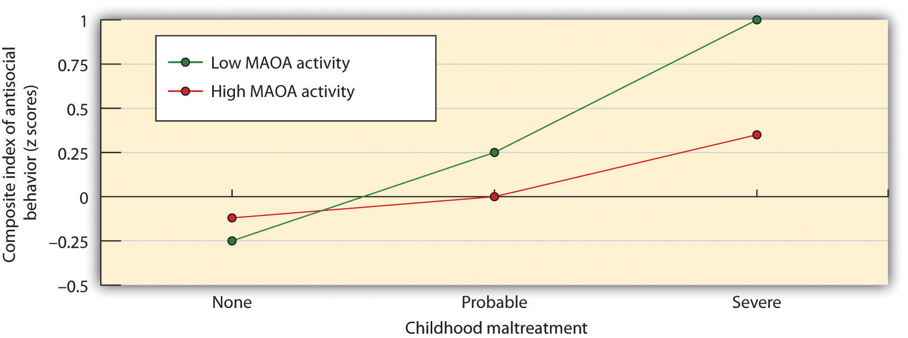
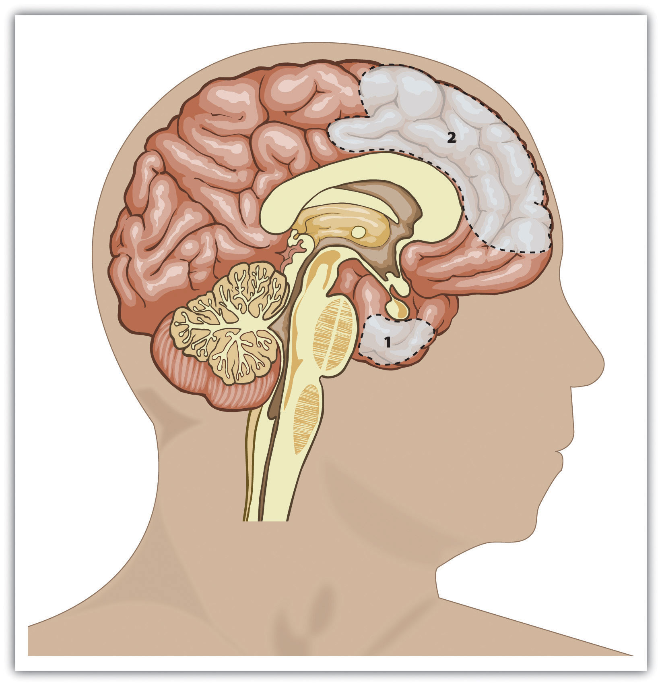
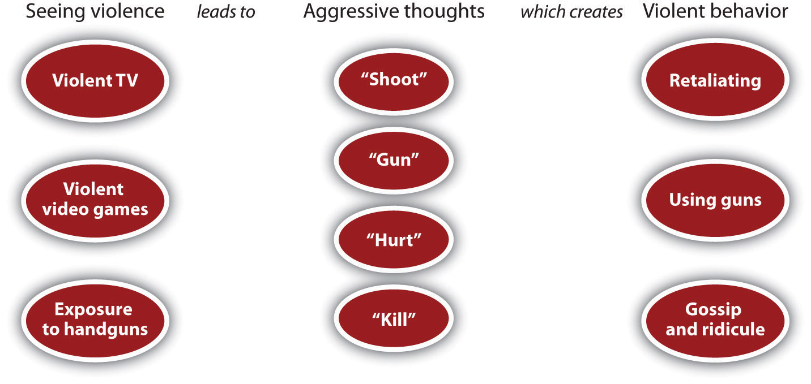
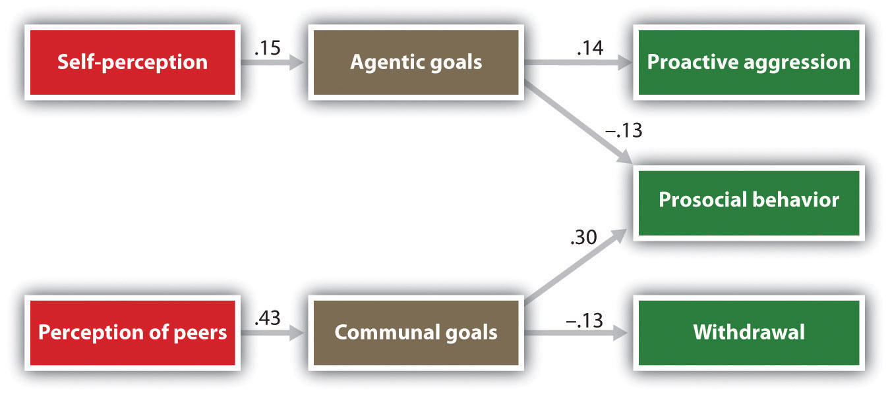

In 2002, a jury of nine women and three men found Thomas Junta, 44, guilty of involuntary manslaughter in the beating death of Michael Costin, 40. The deadly fight between the two fathers occurred after a hockey practice that their two sons attended in Reading, Massachusetts, on July 5, 2000.
The two men started fighting after arguing over rough play during hockey drills in which their sons participated. There were many witnesses to the incident, including Junta’s son as well as Costin’s three sons.
Junta’s 12-year-old son said he saw Costin jump on his father’s back, but he also said that Junta was kneeling over Costin and beating him and that he had screamed for his father to stop.
As reported by the medical examiner, Costin’s body suffered a lot of trauma, including extensive bleeding in the brain.
Prosecutor Sheila Calkins described the fight, saying
“He was on top of him, straddling him…and pounding him on the left side of his head.”
Junta had a hard time keeping his composure on the witness stand, telling the court that he acted out of self-defense and was unaware of how badly he had injured Costin. Costin’s own father and several of his other family members said they forgave Junta, noting that they want to put the incident behind them.
If you go to the movies tonight, you may choose to see one of the more violent ones, in which you will view depictions of assaults, kidnappings, murders, rapes, wars, or executions. If you turn on the TV or surf the Internet you’ll likely see news reports of the real thing—more assaults, kidnappings, murders, rapes, wars, and executions. Indeed, there seems to be more and more violence every day, and we all live with the constant fear of terrorism by weapons of mass destruction. We also suffer more directly from aggression in our everyday life. When we get in our cars we may become the victim of aggressive driving by other drivers, or we may play violent video games that involve—well, more murder and killing. Even relaxing by watching sports on TV will lead us to see violence, as baseball players purposely bean each other with fastballs and hockey players start violent fistfights.
Indeed, the statistics on violence are sobering at many levels (Dutton, Boyanowsky, & Bond, 2005; Staub, 1989).Dutton, D. G., Boyanowsky, E. O., & Bond, M. H. (2005). Extreme mass homicide: From military massacre to genocide. Aggression and Violent Behavior, 10(4), 437–473; Staub, E. (1989). The roots of evil: The origins of genocide and other group violence. New York, NY: Cambridge University Press. In terms of wars, genocides, and mass killings, the 20th century was the most violent of any century in human existence, and the 21st century is shaping up to be just as brutal. There were over 15,000 homicides, 100,000 rapes, and a million assaults in the United States alone in the year 2006. Child abuse is common—it is estimated that over a million children are physically abused and over 150,000 are sexually abused each year in the United States. Sexual violence is also a serious problem. In the United States, over 20% of female college students report having experienced either an attempted or actual rape (Koss, Gidycz, & Wisniewski, 1987).Koss, M. P., Gidycz, C. A., & Wisniewski, N. (1987). The scope of rape: Incidence and prevalence of sexual aggression and victimization in a national sample of higher education students. Journal of Consulting and Clinical Psychology, 55(2), 162–170. A majority of college women and about a third of college men say they have experienced coercive sexual contact (Struckman-Johnson & Struckman-Johnson, 1998).Struckman-Johnson, C., & Struckman-Johnson, D. (Eds.). (1998). The dynamics and impact of sexual coercion of men by women. New York, NY: Guilford Press. And aggression even shows up in children, who routinely fight and bully other children in school.
Although we have argued that people are generally caring toward others—that they have a basic desire to accept, care for, and help them—the violent events that surround us present a problem for this assumption. If people are generally good and care about others so much, then how could anyone possibly kill another human being, let alone participate in a suicide bombing or even genocide? Do aggressive events mean that people are naturally aggressive, violent, and hostile—or are they unusual events, shaped more by particularly extreme social situations that do not reflect the normal character of human beings?
We will answer these questions by considering the underlying principles of aggression—in terms of affect, cognition, and behavior, and in terms of the general goals of protecting the self and reaching out to others. (In this case, however, it is the former goal that prevails.) Aggression is wired into the deepest and oldest parts of our brain and yet is stimulated and controlled by social, situational, and cultural variables. In this chapter we will study the causes of aggression and make some suggestions for how we might be able to reduce it. Most importantly, we will see that—consistent with our analysis of human behavior more generally—aggression is not so much about the goal of harming others as it is about the goal of protecting the self.
Aggression is a word that we use every day to characterize the behavior of others and perhaps even of ourselves. We say that people are aggressive if they yell at or hit each other, if they cut off other cars in traffic, or even when they smash their fists on the table in frustration. But other harmful acts, such as the injuries that sports players receive during a rough game or the killing of enemy soldiers in a war might not be viewed by everyone as aggression. Because aggression is so difficult to define, social psychologists (as well as many other people, including lawyers) judges and politicians, have spent a great deal of time trying to determine what should and should not be considered aggression. Doing so forces us to make use of the processes of causal attribution to help us determine the reasons for the behavior of others.
Social psychologists define aggressionBehavior intended to harm another individual who does not wish to be harmed. as behavior that is intended to harm another individual who does not wish to be harmed (Baron & Richardson, 1994).Baron, R. A., & Richardson, D. R. (1994). Human aggression (2nd ed.). New York, NY: Plenum Press. Because it involves the perception of intent, what looks like aggression from one point of view may not look that way from another, and the same harmful behavior may or may not be aggressive depending on its intent.
You can see that this definition rules out some behaviors that we might normally think are aggressive. For instance, a football linebacker who accidentally breaks the arm of another player or a driver who accidentally hits a pedestrian would not by our definition be displaying aggression because although harm was done, there was no intent to harm. A salesperson who attempts to make a sale through repeated phone calls is not aggressive because he is not intending any harm. (We should say this behavior is “assertive” rather than aggressive.) And not all intentional behaviors that hurt others are aggressive behaviors. A dentist might intentionally give a patient a painful injection of a painkiller, but the goal is to prevent further pain during the procedure.
Because our definition requires us to determine the intent of the perpetrator, there is going to be some interpretation of these intents and there may well be disagreement among the parties involved. The U.S. government perceives the development of a nuclear weapon by North Korea as aggressive because the government believes that the weapon is intended to harm others, but North Korea may see the program as promoting self-defense. Although the player whose arm is broken in a football game may attribute hostile intent, the other player may claim that the injury was not intended. Within the legal system, juries and judges are frequently asked to determine whether harm was done intentionally.
Social psychologists use the term violenceAggression that has extreme physical harm, such as injury or death, as its goal. to refer to aggression that has extreme physical harm, such as injury or death, as its goal. Thus violence is a subset of aggression. All violent acts are aggressive, but only acts that are intended to cause extreme physical damage, such as murder, assault, rape, and robbery, are violent. Slapping someone really hard across the face might be violent, but calling people names would only be aggressive.
The type or level of intent that underlies an aggressive behavior creates the distinction between two fundamental types of aggression, which are caused by very different psychological processes. Emotional or impulsive aggressionAggression that occurs with only a small amount of forethought or intent and that is determined primarily by impulsive emotions. refers to aggression that occurs with only a small amount of forethought or intent and that is determined primarily by impulsive emotions. Emotional aggression is the result of the extreme negative emotions we’re experiencing at the time that we aggress and is not really intended to create any positive outcomes. When Sarah yells at her boyfriend, this is probably emotional aggression—it is impulsive and carried out in the heat of the moment. Other examples are the jealous lover who strikes out in rage or the sports fans at my university who, after our basketball team won the national NCAA championship, lit fires and destroyed cars around the stadium.
Instrumental or cognitive aggressionAggression that is intentional and planned and that is aimed at hurting someone to gain something., on other hand, is aggression that is intentional and planned. Instrumental aggression is more cognitive than affective and may be completely cold and calculating. Instrumental aggression is aimed at hurting someone to gain something—attention, monetary reward, or political power, for instance. If the aggressor believes that there is an easier way to obtain the goal, the aggression would probably not occur. A bully who hits a child and steals her toys, a terrorist who kills civilians to gain political exposure, and a hired assassin are all good examples of instrumental aggression.
Sometimes it is hard to distinguish between instrumental and emotional aggression, and yet it is important to try to do so. Emotional aggression is usually treated as second-degree homicide in the U.S. legal system, to differentiate it from cognitive, instrumental aggression (first-degree homicide). However, it may well be the case that all aggression is at least in part instrumental because it serves some need for the perpetrator. Therefore, it is probably best to consider emotional and instrumental aggression not as distinct categories but rather as endpoints on a continuum (Bushman & Anderson, 2001).Bushman, B. J., & Anderson, C. A. (2001). Is it time to pull the plug on hostile versus instrumental aggression dichotomy? Psychological Review, 108(1), 273–279.
Social psychologists agree that aggression can be verbal as well as physical. Therefore, slinging insults at a boyfriend is definitely, according to our definition, aggressive, just as hitting someone is. Physical aggressionAggression that involves harming others physically. is aggression that involves harming others physically—for instance hitting, kicking, stabbing, or shooting them. Nonphysical aggressionAggression, such as criticizing or spreading rumors, that does not involve physical harm to the other. is aggression that does not involve physical harm. Nonphysical aggression includes verbal aggression (yelling, screaming, swearing, and name calling) and relational or social aggression, which is defined as intentionally harming another person’s social relationships, for instance by gossiping about another person, excluding others from our friendship, or giving others the “silent treatment” (Crick & Grotpeter, 1995).Crick, N. R., & Grotpeter, J. K. (1995). Relational aggression, gender, and social-psychological adjustment. Child Development, 66(3), 710–722. Nonverbal aggression also occurs in the form of sexual, racial, and homophobic jokes and epithets, which are designed to cause harm to individuals.
The list that follows this paragraph (adapted from Archer & Coyne, 2005) presents some examples of the types of nonphysical aggression that have been observed in children and adults. One reason that people may use nonphysical rather than physical aggression is that it is more subtle. When we use these techniques we may be able to better get away with it—we can be aggressive without appearing to others to be aggressing.
Although the negative outcomes of physical aggression are perhaps more obvious, nonphysical aggression also has costs to the victim. Craig (1998)Craig, W. M. (1998). The relationship among bullying, victimization, depression, anxiety, and aggression in elementary school children. Personality and Individual Differences, 24(1), 123–130. found that children who were victims of bullying showed more depression, loneliness, peer rejection, and anxiety in comparison to other children. In Great Britain, 20% of adolescents report being bullied by someone spreading hurtful rumors about them (Sharp, 1995).Sharp, S. (1995). How much does bullying hurt? The effects of bullying on the personal well-being and educational progress of secondary aged students. Educational and Child Psychology, 12(2), 81–88. Girls who are victims of nonphysical aggression have been found to be more likely to engage in harmful behaviors such as smoking or considering suicide (Olafsen & Viemero, 2000).Olafsen, R. N., & Viemero, V. (2000). Bully/victim problems and coping with stress in school among 10- to 12-year-old pupils in Aland, Finland. Aggressive Behavior, 26(1), 57–65. And Paquette and Underwood (1999)Paquette, J. A., & Underwood, M. K. (1999). Gender differences in young adolescents’ experiences of peer victimization: Social and physical aggression. Merrill-Palmer Quarterly, 45(2), 242–266. found that both boys and girls rated social aggression as making them feel more “sad” and “bad” than did physical aggression.
Recently, there has been an increase in school bullying through cyberbullying—aggression inflicted through the use of computers, cell phones, and other electronic devices (Hinduja & Patchin, 2009).Hinduja, S., & Patchin J. W. (2009). Bullying beyond the schoolyard: Preventing and responding to cyberbullying. Thousand Oaks, CA: Corwin Press. Perhaps the most notable recent example was the suicide of 18-year-old Rutgers University student Tyler Clementi on September 22, 2010. Tyler’s last words before he died were shared through an update to his Facebook status:
“jumping off the gw bridge sorry”
Clementi’s suicide occurred after his roommate, Dharun Ravi, and Ravi’s friend Molly Wei secretly enabled a remote webcam in a room where Tyler and a male friend were sharing a sexual encounter and then broadcasted the streaming video footage across the Internet.
Cyberbullying can be directed at anyone, but lesbian, gay, bisexual, and transgendered (LGBT) students are most likely to be the targets (Potok, 2010).Potok M. (2010). Gays remain minority most targeted by hate crimes. Intelligence Report, 140. Retrieved from http://www.splcenter.org/get-informed/intelligence-report/browse-all-issues/2010/winter/under-attack-gays-remain-minority-mos Blumenfeld and Cooper (2010)Blumenfeld, W. J., & Cooper, R. M. (2010). LGBT and allied youth responses to cyberbullying: Policy implications. International Journal of Critical Pedagogy, 3(1), 114–133. found that 54% of LGBT youth reported being cyberbullied within the past three months.
Hinduja and Patchin (2009)Hinduja S., & Patchin, J. W. (2009). Bullying beyond the schoolyard: Preventing and responding to cyberbullying. Thousand Oaks, CA: Corwin Press. found that youth who report being victims of cyberbullying experience a variety of stresses from it, including psychological disorders, alcohol use, and in extreme cases, suicide. In addition to its emotional toll, cyberbullying also negatively affects students’ participation in, and success at, school.
Terrorism as Instrumental Aggression
There is perhaps no clearer example of the prevalence of violence in our everyday lives than the increase in terrorism that has been observed in the past decades. These terrorist attacks have occurred in many countries across the world, in both Eastern as well as Western cultures. Even affluent Western democracies such as Denmark, Italy, Spain, France, Canada, and the United States have experienced terrorism, which has killed thousands of people, primarily innocent civilians. Terrorists use tactics such as killing civilians to create publicity for their causes and to lead the governments of the countries that are attacked to overrespond to the threats (McCauley, 2004).McCauley, C. (Ed.). (2004). Psychological issues in understanding terrorism and the response to terrorism. Westport, CT: Praeger Publishers/Greenwood Publishing Group.
How can we understand the motives and goals of terrorists? Are they naturally evil people whose primary desire is hurt others? Or are they more motivated to gain something for themselves, their families, or their countries? What are the thoughts and feelings that terrorists experience that drive them to their extreme behaviors? And what person and situational variables cause terrorism?
Prior research has attempted to determine if there are particular personality characteristics that describe terrorists (Horgan, 2005).Horgan, J. (2005). The psychology of terrorism. New York, NY: Routledge. Perhaps terrorists are individuals with some kind of deep psychological disturbance. However, the research conducted on various terrorist organizations does not reveal anything distinctive about the psychological makeup of individual terrorists.
Empirical data has also found little evidence for some of the situational variables that might have been expected to be important. There is little evidence for a relation between poverty or lack of education and terrorism. Furthermore, terrorist groups seem to be quite different from each other in terms of their size, organizational structure, and sources of support.
Arie Kruglanski and Shira Fishman (2006)Kruglanski, A. W., & Fishman, S. (2006). Terrorism between “syndrome” and “tool.” Current Directions in Psychological Science, 15(1), 45–48. have argued that it is best to understand terrorism not from the point of view of either particular personality traits or particular situational causes but rather as a type of instrumental aggression—a means to an end. In their view, terrorism is simply a “tool,” a tactic of warfare that anyone from any nation, military group, or even a lone perpetrator could use.
Kruglanski and his colleagues argue that terrorists believe that they can gain something through their terrorist acts that they could not gain through other methods. The terrorist makes a cognitive, deliberate, and instrumental decision that his or her action will gain particular objectives. Furthermore, the goal of the terrorist is not to harm others but rather to gain something personally or for one’s religion, beliefs, or country. Even suicide terrorists believe that they are dying for personal gain—for instance, the promise of heavenly paradise, the opportunity to meet Allah and the prophet Muhammad, and rewards for members of one’s family (Berko & Erez, 2007).Berko, A., & Erez, E. (2007). Gender, Palestinian women, and terrorism: Women’s liberation or oppression? Studies in Conflict & Terrorism, 30(6), 493–519. Thus, for the terrorist, willingness to die in an act of suicidal terrorism may be motivated not so much by the desire to harm others but rather by self-concern—the desire to live forever.
One recent example of the use of terrorism to promote one’s beliefs can be seen in the actions of Anders Behring Breivik, 32, who killed over 90 people in July 2011 through a bomb attack in downtown Olso, Norway, and a shooting spree at a children’s campground. Breivik planned his attacks for years, believing that his actions would help spread his conservative beliefs about immigration and alert the Norwegian government to the threats posed by multiculturalism (and particularly the inclusion of Muslims in Norwegian society). This violent act of instrumental aggression is typical of terrorists.

Anders Behring Breivik killed over 90 people in a misguided effort to promote his conservative beliefs about immigration.
Used with permission from AP Photo.
Consider how social psychologists would analyze each of the following behaviors. What do you think might have caused each one? Consider your answer in terms of the ABCs of social psychology, as well as the two underlying motivations of enhancing the self and connecting with others.
When we see so much violence around us every day, we might conclude that people have an innate tendency, or even an instinct, to be aggressive. Some well-known philosophers and psychologists have argued that this is the case. For instance, the philosopher Thomas Hobbes (1588–1679) took this view, arguing that humans are naturally evil and that only society could constrain their aggressive tendencies. On the other hand, the philosopher Jean-Jacques Rousseau (1712–1778) was more positive. He believed that humans are naturally gentle creatures who are aggressive only because we are taught to be so by our society. The psychologist Sigmund Freud, who lived through the disaster of World War I in which millions of his fellow human beings were massacred, argued that although people do have a “life instinct,” they also have a “death instinct”—an impulse toward destruction of themselves and others.
A belief in the innate aggressive tendencies of human beings—that the ability to be aggressive to others, at least under some circumstances, is part of our fundamental human makeup—is consistent with the principles of evolutionary psychology. After all, the goal of maintaining and enhancing the self will in some cases require that we prevent others from harming us and those we care about. We may aggress against others because it allows us to gain access to valuable resources such as food and desirable mates or to protect ourselves from direct attack by others. And we may aggress when we feel that our social status is threatened. Therefore, if aggression helps in either our individual survival or in the survival of our genes, then the process of natural selection may well cause humans, as it would any other animal, to be aggressive. Human beings need to be able to aggress, and nature has provided us with these skills (Buss & Duntley, 2006).Buss, D. M., & Duntley, J. D. (Eds.). (2006). The evolution of aggression. Madison, CT: Psychosocial Press. Under the right situation, almost all of us will aggress.
However, just because we can aggress does not mean that we will. It is not necessarily evolutionarily adaptive to aggress in all situations. For one, aggressing can be costly if the other person aggresses back. Therefore neither people nor animals are always aggressive. Rather, they use aggression only when they feel that they absolutely need to (Berkowitz, 1993).Berkowitz, L. (1993). Aggression: Its causes, consequences and control. New York, NY: McGraw-Hill. In animals, the fight-or-flight response to threat leads them sometimes to attack and sometimes to flee the situation. Human beings have an even wider variety of potential responses to threat, only one of which is aggression. Again, the social situation is critical. We may react violently in situations in which we are uncomfortable or fearful or when another person has provoked us, but we may react more calmly in other settings. And there are cultural differences, such that violence is more common in some cultures than in others.
There is no doubt that aggression is in part genetically determined. Animals can be bred to be aggressive by breeding the most aggressive offspring with each other (Lagerspetz & Lagerspetz, 1971).Lagerspetz, K. M., & Lagerspetz, K. Y. (1971). Changes in the aggressiveness of mice resulting from selective breeding, learning and social isolation. Scandinavian Journal of Psychology, 12(4), 241–248. Children who are aggressive as infants also are aggressive when they are adults (Coie & Dodge, 1998; Dubow, Huesmann, & Boxer, 2003; Raine, 1993),Coie, J. D., & Dodge, K. A. (1998). Aggression and antisocial behavior. In N. Eisenberg & W. Damon (Eds.), Handbook of child psychology (5th ed., Vol. 3, pp. 779–862). Hoboken, NJ: John Wiley & Sons; Dubow, E. F., Huesmann, L. R., & Boxer, P. (2003). Theoretical and methodological considerations in cross-generational research on parenting and child aggressive behavior. Journal of Abnormal Child Psychology, 31(2), 185–192; Raine, A. (1993). The psychopathology of crime: Criminal behavior as a clinical disorder. San Diego, CA: Academic Press. and identical twins are more similar than fraternal twins in their aggressive tendencies and criminal records. Behavioral genetics studies have found that criminal and aggressive behavior is correlated at about .7 for identical twins but only at about .4 for fraternal twins (Tellegen et al., 1988).Tellegen, A., Lykken, D. T., Bouchard, T. J., Wilcox, K. J., Segal, N. L., & Rich, S. (1988). Personality similarity in twins reared apart and together. Journal of Personality and Social Psychology, 54(6), 1031–1039.
Avsalom Caspi and his colleagues (2002)Caspi, A., McClay, J., Moffitt, T., Mill, J., Martin, J., Craig, I. W.…Poulton, R. (2002). Role of genotype in the cycle of violence in maltreated children. Science, 297(5582), 851–854. found evidence for the person x situation interaction in determining aggression. They focused on the the influence of a particular genetic factor, the monoamine oxidase (MAOA) gene, located on the X chromosome, that produces an enzyme that influences the production of serotoninA neurotransmitter that influences mood, appetite, and sleep and that inhibits aggression., a neurotransmitter that influences mood, appetite, and sleep and that reduces aggression. Supporting the role of genetics in aggression, they found that individuals who had lower levels of activity of this gene were more at risk to show a variety of aggressive behaviors as adults. However, they also found that the genetic factor was only important for children who had also been severely mistreated. This person-by-situation interaction effect is shown in Figure 10.1. Although much more research is needed, it appears that aggressive behavior, like most other behaviors, is affected by an interaction between genetic and environmental variations.
Figure 10.1
Caspi and his colleagues (2002)Caspi, A., McClay, J., Moffitt, T., Mill, J., Martin, J., Craig, I. W.Caspi, A., McClay, J., Moffitt, T., Mill, J., Martin, J., Craig, I. W., et al.#8230;Poulton, R. (2002). Role of genotype in the cycle of violence in maltreated children. Science, 297(5582), 851–854. found evidence for a person-by-situation interaction regarding the role of genetics and parental treatment in aggression. Antisocial behavior and aggression were greater for children who had been severely maltreated, but this effect was even stronger for children with a gene variation that reduced the production of serotonin.
Evolutionary principles suggest that we should be less likely to harm those who are genetically related to us than we are to harm others who are different. And research has supported this finding—for instance, biological parents are much less likely to abuse or murder their own children than stepparents are to harm their stepchildren (Daly & Wilson, 1998, 1999).Daly, M., & Wilson, M. (Eds.). (1998). The evolutionary social psychology of family violence. Mahwah, NJ: Lawrence Erlbaum; Daly, M., & Wilson, M. (Eds.). (1999). An evolutionary psychological perspective on homicide. Thousand Oaks, CA: Sage. In fact, these researchers found that preschool children living with a stepparent or foster parent were many times more likely to be murdered by their parent than were children who lived with both biological parents.
Aggression is controlled in large part by the area in the older part of the brain known as the amygdala (Figure 10.2 "Key Brain Structures Involved in Regulating and Inhibiting Aggression"). The amygdalaThe region in the limbic system that is primarily responsible for regulating our perceptions of, and reactions to, aggression and fear. is a brain region responsible for regulating our perceptions of, and reactions to, aggression and fear. The amygdala has connections with other body systems related to fear, including the sympathetic nervous system, facial responses, the processing of smells, and the release of neurotransmitters related to stress and aggression.
In addition to helping us experience fear, the amygdala also helps us learn from situations that create fear. The amygdala is activated in response to positive outcomes but also to negative ones, and particularly to stimuli that we see as threatening and fear arousing. When we experience events that are dangerous, the amygdala stimulates the brain to remember the details of the situation so that we learn to avoid it in the future. The amygdala is activated when we look at facial expressions of other people experiencing fear or when we are exposed to members of racial outgroups (Morris, Frith, Perrett, & Rowland, 1996; Phelps et al., 2000).Morris, J. S., Frith, C. D., Perrett, D. I., & Rowland, D. (1996). A differential neural response in the human amygdala to fearful and happy facial expressions. Nature, 383(6603), 812–815; Phelps, E. A., O’Connor, K. J., Cunningham, W. A., Funayama, E. S., Gatenby, J. C., Gore, J. C., & Banaji, M. R. (2000). Performance on indirect measures of race evaluation predicts amygdala activation. Journal of Cognitive Neuroscience, 12(5), 729–738.
Although the amygdala helps us perceive and respond to danger, and this may lead us to aggress, other parts of the brain serve to control and inhibit our aggressive tendencies. One mechanism that helps us control our negative emotions and aggression is a neural connection between the amygdala and regions of the prefrontal cortex (Gibson, 2002).Gibson, K. R. (2002). Evolution of human intelligence: The roles of brain size and mental construction. Brain Behavior and Evolution, 59, 10–20.
The prefrontal cortex is in effect a control center for aggression: When it is more highly activated, we are more able to control our aggressive impulses. Research has found that the cerebral cortex is less active in murderers and death row inmates, suggesting that violent crime may be caused at least in part by a failure or reduced ability to regulate emotions (Davidson, Jackson, & Kalin, 2000; Davidson, Putnam, & Larson, 2000).Davidson, R. J., Jackson, D. C., & Kalin, N. H. (2000). Emotion, plasticity, context, and regulation: Perspectives from affective neuroscience. Psychological Bulletin, 126(6), 890–909; Davidson, R. J., Putnam, K. M., & Larson, C. L. (2000). Dysfunction in the neural circuitry of emotion regulation—A possible prelude to violence. Science, 289(5479), 591–594.
Figure 10.2 Key Brain Structures Involved in Regulating and Inhibiting Aggression
Brain regions that influence aggression include the amygdala (area 1) and the prefrontal cortex (area 2). Individual differences in one or more of these regions or in the interconnections among them can increase the propensity for impulsive aggression.
Hormones are also important in creating aggression. Most important in this regard is the male sex hormone testosteroneThe male sex hormone., which is associated with increased aggression in both animals and in humans. Research conducted on a variety of animals has found a strong correlation between levels of testosterone and aggression. This relationship seems to be weaker among humans than among animals, yet it is still significant (Dabbs, Hargrove, & Heusel, 1996).Dabbs, J. M., Jr., Hargrove, M. F., & Heusel, C. (1996). Testosterone differences among college fraternities: Well-behaved vs. rambunctious. Personality and Individual Differences, 20(2), 157–161.
In one study showing the relationship between testosterone and behavior, James Dabbs and his colleagues (Dabbs, Hargrove, & Heusel, 1996)Dabbs, J. M., Jr., Hargrove, M. F., & Heusel, C. (1996). Testosterone differences among college fraternities: Well-behaved vs. rambunctious. Personality and Individual Differences, 20(2), 157–161. measured the testosterone levels of 240 men who were members of 12 fraternities at two universities. They also obtained descriptions of the fraternities from university officials, fraternity officers, yearbook and chapter house photographs, and researcher field notes. The researchers correlated the testosterone levels and the descriptions of each of the fraternities. They found that the fraternities that had the highest average testosterone levels were also more wild and unruly, and in one case were known across campus for the crudeness of their behavior. The fraternities with the lowest average testosterone levels, on the other hand, were more well-behaved, friendly, academically successful, and socially responsible. Another study found that juvenile delinquents and prisoners who have high levels of testosterone also acted more violently (Banks & Dabbs, 1996).Banks, T., & Dabbs, J. M., Jr. (1996). Salivary testosterone and cortisol in delinquent and violent urban subculture. Journal of Social Psychology, 136(1), 49–56. Testosterone affects aggression by influencing the development of various areas of the brain that control aggressive behaviors. The hormone also affects physical development such as muscle strength, body mass, and height that influence our ability to successfully aggress.
Although testosterone levels are much higher in men than in women, the relationship between testosterone and aggression is not limited to males. Studies have also shown a positive relationship between testosterone and aggression and related behaviors (such as competitiveness) in women (Cashdan, 2003).Cashdan, E. (2003). Hormones and competitive aggression in women. Aggressive Behavior, 29(2), 107–115. Although women have lower levels of testosterone overall, they are more influenced by smaller changes in these levels than are men.
It must be kept in mind that the observed relationships between testosterone levels and aggressive behavior that have been found in these studies cannot prove that testosterone causes aggression—the relationships are only correlational. In fact, the effect of aggression on testosterone is probably stronger than the effect of testosterone on aggression. Engaging in aggression causes temporary increases in testosterone. People who feel that they have been insulted show both more aggression as well as more testosterone (Cohen, Nisbett, Bosdle, & Schwarz, 1996),Cohen, D., Nisbett, R. E., Bosdle, B., & Schwarz, N. (1996). Insult, aggression, and the southern culture of honor: An “experimental ethnography.” Journal of Personality and Social Psychology, 70, 945–960. and the experience of stress is also associated with higher levels of testosterone and also with aggression. Even playing an aggressive game, such as tennis or chess, increases the testosterone levels of the winners and decreases the testosterone levels of the losers (Gladue, Boechler, & McCaul, 1989; Mazur, Booth, & Dabbs, 1992).Gladue, B. A., Boechler, M., & McCaul, K. D. (1989). Hormonal response to competition in human males. Aggressive Behavior, 15(6), 409–422; Mazur, A., Booth, A., & Dabbs, J. M. (1992). Testosterone and chess competition. Social Psychology Quarterly, 55(1), 70–77. Perhaps this is why the fans at my university rioted after our team won the basketball championship.
Testosterone is not the only biological factor linked to human aggression. Recent research has found that serotonin is also important, as serotonin tends to inhibit aggression. Low levels of serotonin have been found to predict future aggression (Kruesi, Hibbs, Zahn, & Keysor, 1992; Virkkunen, de Jong, Bartko, & Linnoila, 1989).Kruesi, M. J., Hibbs, E. D., Zahn, T. P., & Keysor, C. S. (1992). A 2-year prospective follow-up study of children and adolescents with disruptive behavior disorders: Prediction by cerebrospinal fluid 5-hydroxyindoleacetic acid, homovanillic acid, and autonomic measures? Archives of General Psychiatry, 49(6), 429–435; Virkkunen, M., de Jong, J., Bartko, J. J., & Linnoila, M. (1989). Psychobiological concomitants of history of suicide attempts among violent offenders and impulsive fire setters. Archives of General Psychiatry, 46(7), 604–606. Violent criminals have lower levels of serotonin than do nonviolent criminals, and criminals convicted of impulsive violent crimes have lower serotonin levels than criminals convicted of premeditated crimes (Virkkunen, Nuutila, Goodwin, & Linnoila, 1987).Virkkunen, M., Nuutila, A., Goodwin, F. K., & Linnoila, M. (1987). Cerebrospinal fluid monoamine metabolite levels in male arsonists. Archives of General Psychiatry, 44(3), 241–247.
In one experiment assessing the influence of serotonin on aggression, Berman, McCloskey, Fanning, Schumacher, and Coccaro (2009)Berman, M. E., McCloskey, M. S., Fanning, J. R., Schumacher, J. A., & Coccaro, E. F. (2009). Serotonin augmentation reduces response to attack in aggressive individuals. Psychological Science, 20(6), 714–720. first chose two groups of participants, one of which indicated that they had frequently engaged in aggression (temper outbursts, physical fighting, verbal aggression, assaults, and aggression toward objects) in the past, and a second group that reported that they had not engaged in aggressive behaviors.
In a laboratory setting, participants from both groups were then randomly assigned to receive either a drug that raises serotonin levels or a placebo. Then the participants completed a competitive task with what they thought was another person in another room. (The opponent’s responses were actually controlled by computer.) During the task, the person who won each trial could punish the loser of the trial by administering electric shocks to the finger. Over the course of the game, the “opponent” kept administering more intense shocks to the participants.
As you can see in Figure 10.3, the participants who had a history of aggression were significantly more likely to retaliate by administering severe shocks to their opponent than were the less aggressive participants. The aggressive participants who had been given serotonin, however, showed significantly reduced aggression levels during the game. Increased levels of serotonin appear to help people and animals inhibit impulsive responses to unpleasant events (Soubrié, 1986).Soubrié, P. (1986). Reconciling the role of central serotonin neurons in human and animal behavior. Behavioral and Brain Sciences, 9(2), 319–335.
Figure 10.3

Participants who reported having engaged in a lot of aggressive behaviors (right panel) showed more aggressive responses in a competitive game than did those who reported being less aggressive (left panel). The aggression levels for the more aggressive participants increased over the course of the experiment for those who did not take a dosage of serotonin but aggression did not significantly increase for those who had taken serotonin. Data are from Berman et al. (2009).Berman, M. E., McCloskey, M. S., Fanning, J. R., Schumacher, J. A., & Coccaro, E. F. (2009). Serotonin augmentation reduces response to attack in aggressive individuals. Psychological Science, 20(6), 714–720.
Perhaps not surprisingly, research has found that the consumption of alcohol increases aggression. In fact, excessive alcohol consumption is involved in a majority of violent crimes, including rape and murder (Abbey, Ross, McDuffie, & McAuslan, 1996).Abbey, A., Ross, L. T., McDuffie, D., & McAuslan, P. (1996). Alcohol and dating risk factors for sexual assault among college women. Psychology of Women Quarterly, 20(1), 147–169. The evidence is very clear, both from correlational research designs and from experiments in which participants are randomly assigned either to ingest or not ingest alcohol, that alcohol increases the likelihood that people will respond aggressively to provocations (Bushman, 1997; Ito, Miller, & Pollock, 1996; Graham, Osgood, Wells, & Stockwell, 2006).Bushman, B. J. (Ed.). (1997). Effects of alcohol on human aggression: Validity of proposed explanations. New York, NY: Plenum Press; Graham, K., Osgood, D. W., Wells, S., & Stockwell, T. (2006). To what extent is intoxication associated with aggression in bars? A multilevel analysis. Journal of Studies on Alcohol, 67(3), 382–390; Ito, T. A., Miller, N., & Pollock, V. E. (1996). Alcohol and aggression: A meta-analysis on the moderating effects of inhibitory cues, triggering events, and self-focused attention. Psychological Bulletin, 120(1), 60–82. Even people who are not normally aggressive may react with aggression when they are intoxicated (Bushman & Cooper, 1990).Bushman, B. J., & Cooper, H. M. (1990). Effects of alcohol on human aggression: An integrative research review. Psychological Bulletin, 107(3), 341–354.
Alcohol increases aggression for a couple of reasons. For one, alcohol disrupts executive functions, which are the cognitive abilities that help us plan, organize, reason, achieve goals, control emotions, and inhibit behavioral tendencies (Séguin & Zelazo, 2005).Séguin, J. R., & Zelazo, P. D. (2005). Executive function in early physical aggression. In R. E. Tremblay, W. W. Hartup, & J. Archer (Eds.), Developmental origins of aggression (pp. 307–329). New York, NY: Guilford Press. Executive functioning occurs in the prefrontal cortex, which is the area that allows us to control aggression. Alcohol therefore reduces the ability of the person who has consumed it to inhibit his or her aggression (Steele & Southwick, 1985).Steele, C. M., & Southwick, L. (1985). Alcohol and social behavior: I. The psychology of drunken excess. Journal of Personality and Social Psychology, 48(1), 18–34. Acute alcohol consumption is more likely to facilitate aggression in people with low, rather than high, executive functioning abilities.
Secondly, when people are intoxicated, they become more self-focused and less aware of the social situation, a state that is known as alcohol myopia. As a result, they are less likely to notice the social constraints that normally prevent them from engaging aggressively and are less likely to use those social constraints to guide them. We might normally notice the presence of a police officer or other people around us, which would remind us that being aggressive is not appropriate, but when we are drunk we are less likely to be so aware. The narrowing of attention that occurs when we are intoxicated also prevents us from being aware of the negative outcomes of our aggression. When we are sober, we realize that being aggressive may produce retaliation as well as cause a host of other problems, but we are less likely to be aware of these potential consequences when we have been drinking (Bushman & Cooper, 1990).Bushman, B. J., & Cooper, H. M. (1990). Effects of alcohol on human aggression: An integrative research review. Psychological Bulletin, 107(3), 341–354.
Alcohol also influences aggression through expectations. If we expect that alcohol will make us more aggressive, then we tend to become more aggressive when we drink. The sight of a bottle of alcohol or an alcohol advertisement increases aggressive thoughts and hostile attributions about others (Bartholow & Heinz, 2006),Bartholow, B. D., & Heinz, A. (2006). Alcohol and aggression without consumption: Alcohol cues, aggressive thoughts, and hostile perception bias. Psychological Science, 17(1), 30–37. and the belief that we have consumed alcohol increases aggression (Bègue et al., 2009).Bègue, L., Subra, B., Arvers, P., Muller, D., Bricout, V., & Zorman, M. (2009). A message in a bottle: Extrapharmacological effects of alcohol on aggression. Journal of Experimental Social Psychology, 45(1), 137–142.
If I were to ask you about the times that you have been aggressive, you probably would tell me that many of them occurred when you were angry, in a bad mood, tired, in pain, sick, or frustrated. And you would be right—we are much more likely to aggress when we are experiencing negative emotions. When we are feeling ill, when we get a poor grade on an exam, or when our car doesn’t start—in short, when we are angry and frustrated in general—we are likely to have many unpleasant thoughts and feelings, and these are likely to lead to violent behavior. Aggression is caused in large part by the negative emotions that we experience as a result of the aversive events that occur to us and by our negative thoughts that accompany them (Berkowitz & Heimer, 1989).Berkowitz, L., & Heimer, K. (1989). On the construction of the anger experience: Aversive events and negative priming in the formation of feelings. In L. Berkowitz (Ed.), Advances in experimental social psychology (Vol. 22, pp. 1–37). San Diego, CA: Academic Press.
One kind of negative affect that increases arousal when we are experiencing it is frustration (Berkowitz, 1989; Dollard, Doob, Miller, Mowrer, & Sears, 1939).Berkowitz, L. (1989). Frustration-aggression hypothesis: Examination and reformulation. Psychological Bulletin, 106(1), 59–73; Dollard, J., Miller, N., & Doob, L. (1939). Frustration and aggression. New Haven, CT: Yale University Press. Frustration occurs when we feel that we are not obtaining the important goals that we have set for ourselves. We get frustrated when our computer crashes while we are writing an important paper, when we feel that our social relationships are not going well, or when our schoolwork is going poorly. How frustrated we feel is also determined in large part through social comparison. If we can make downward comparisons with important others, in which we see ourselves as doing as well or better than they are, then we are less likely to feel frustrated. But when we are forced to make upward comparisons with others, we may feel frustration. When we receive a poorer grade than our classmates received or when we are paid less than our coworkers, this can be frustrating to us.
Although frustration is one cause of the negative affect that can lead to aggression, there are other sources as well. In fact, anything that leads to discomfort or negative emotions can increase aggression. For instance, working in extremely high temperatures is known to increase aggression—when we are hot, we are more aggressive. Griffit and Veitch (1971)Griffit, W., & Veitch, R. (1971). Hot and crowded: Influence of population density and temperature on interpersonal affective behavior. Journal of Personality and Social Psychology, 17(1), 92–98. had students complete questionnaires either in rooms in which the heat was at a normal temperature or in rooms in which the temperature was over 90 degrees Fahrenheit. The students in the latter conditions expressed significantly more hostility.
Hotter temperatures are associated with higher levels of aggression and violence (Anderson, Anderson, Dorr, DeNeve, & Flanagan, 2000).Anderson, C. A., Anderson, K. B., Dorr, N., DeNeve, K. M., & Flanagan, M. (2000). Temperature and aggression. In M. P. Zanna (Ed.), Advances in experimental social psychology (Vol. 32, pp. 63–133). San Diego, CA: Academic Press. Hotter regions generally have higher violent crime rates than cooler regions, and violent crime is greater on hot days than it is on cooler days, and during hotter years than during cooler years (Bushman, Wang, & Anderson, 2005).Bushman, B. J., Wang, M. C., & Anderson, C. A. (2005). Is the curve relating temperature to aggression linear or curvilinear? Assaults and temperature in Minneapolis reexamined. Journal of Personality and Social Psychology, 89(1), 62–66. Even the number of baseball batters hit by pitches is higher when the temperature at the game is higher (Reifman, Larrick, & Fein, 1991).Reifman, A. S., Larrick, R. P., & Fein, S. (1991). Temper and temperature on the diamond: The heat-aggression relationship in major league baseball. Personality and Social Psychology Bulletin, 17(5), 580–585. Researchers who study the relationship between heat and aggression have proposed that global warming is likely to produce even more violence (Anderson & Delisi, 2011).Anderson, C. A., & DeLisi, M. (2011). Implications of global climate change for violence in developed and developing countries. In J. Forgas, A. Kruglanski, & K. Williams (Eds.), Social conflict and aggression. New York, NY: Psychology Press. Pain also increases aggression. Berkowitz (1993)Berkowitz, L. (1993). Pain and aggression: Some findings and implications. Motivation and Emotion, 17(3), 277–293. reported a study in which participants were made to feel pain by placing their hands in a bucket of ice-cold water, and it was found that this source of pain also increased subsequent aggression.
The Effects of Provocation and Fear of Death on Aggression
McGregor et al. (1998)McGregor, H. A., Lieberman, J. D., Greenberg, J., Solomon, S., Arndt, J., Simon, L., & Pyszczynski, T. (1998). Terror management and aggression: Evidence that mortality salience motivates aggression against worldview-threatening others. Journal of Personality and Social Psychology, 74(3), 590–605. demonstrated that people who have been provoked by others may be particularly aggressive if they are also experiencing negative emotions about the fear of their own death. The participants in the study had been selected, on the basis of prior reporting, to have either politically liberal or politically conservative views. When they arrived at the lab they were asked to write a short paragraph describing their opinion of politics in the United States. In addition, half of the participants (the mortality salient condition) were asked to “briefly describe the emotions that the thought of your own death arouses in you” and to “Jot down as specifically as you can, what you think will happen to you as you physically die, and once you are physically dead.” Participants in the exam control condition also thought about a negative event, but not one associated with a fear of death. They were instructed to “Please briefly describe the emotions that the thought of your next important exam arouses in you’’ and to “Jot down as specifically as you can, what you think will happen to you as you physically take your next exam, and once you are physically taking your next exam.”
Then the participants read an essay that had supposedly just been written by another person in the study. (The other person did not exist, but the participants didn’t know this until the end of the experiment.) The essay that the participants read had been prepared by the experimenters to condemn politically liberal views or to condemn politically conservative views. Thus one-half of the participants were provoked by the other person by reading a statement that strongly conflicted with their own political beliefs, whereas the other half read an essay that supported their (liberal or conservative) beliefs.
At this point the participants moved on to what they thought was a completely separate study in which they were to be tasting and giving their impression of some foods. Furthermore, they were told that it was necessary for the participants in the research to administer the food samples to each other. The participants then found out that the food they were going to be sampling was spicy hot sauce and that they were going to be administering the sauce to the same person whose essay they had just read! In addition, the participants read some information about the other person that indicated that the other person very much disliked eating spicy food. Participants were given a taste of the hot sauce (which was very hot) and then instructed to place a quantity of it into a cup for the other person to sample. Furthermore, they were told that the other person had to eat all the sauce.
As you can see in Figure 10.4 "Mortality Salience and Aggression", this research provides another example of how negative feelings can lead us to be aggressive after we have been provoked. The threatening essay had little effect on the participants in the exam control condition. On the other hand, the participants who were both provoked by the other person and who had also been reminded of their own death administered significantly more aggression than did the participants in the other three conditions.
Figure 10.4 Mortality Salience and AggressionMcGregor, H. A., Lieberman, J. D., Greenberg, J., Solomon, S., Arndt, J., Simon, L., & Pyszczynski, T. (1998). Terror management and aggression: Evidence that mortality salience motivates aggression against worldview-threatening others. Journal of Personality and Social Psychology, 74(3), 590–605.

A threat to one’s worldview increased aggression but only for participants who had been thinking about their own death. Data are from McGregor et al. (1998).
Just as negative feelings can increase aggression, positive affect can reduce it. In one study (Baron & Ball, 1974),Baron, R. A., & Ball, R. L. (1974). The aggression-inhibiting influence of nonhostile humor. Journal of Experimental Social Psychology, 10(1), 23–33. participants were first provoked by an experimental confederate. Then the participants were, according to random assignment, shown either funny cartoons or neutral pictures. When the participants were given an opportunity to retaliate by giving shocks as part of an experiment on learning, those who had seen the positive cartoons gave fewer shocks than those who had seen the neutral pictures.
It seems that feeling good about ourselves, or feeling good about others, is incompatible with anger and aggression. You can see that this is in essence the flip side of the results we discussed in Chapter 9 "Helping and Altruism" regarding altruism: Just as feeling bad leads us to aggress, feeling good makes us more likely to help and less likely to hurt others. This makes perfect sense, of course, since emotions are signals regarding the threat level around us. When we feel good, we feel safe and do not think that we need to aggress.
Of course, negative emotions do not always lead to aggression toward the source of our frustration. If we get a bad grade from our teacher or a ticket from a police officer, it is not likely that we will directly aggress against him or her. Rather, we may displace our aggression onto others, and particularly toward others who seem similar to the source of our frustration (Miller, Pedersen, Earleywine, & Pollock, 2003).Miller, N., Pedersen, W. C., Earleywine, M., & Pollock, V. E. (2003). A theoretical model of triggered displaced aggression. Personality and Social Psychology Review, 7(1), 75–97. Displaced aggressionAggression that occurs when negative emotions caused by one person trigger aggression toward a different person. occurs when negative emotions caused by one person trigger aggression toward a different person. A recent meta-analysis has found clear evidence that people who are provoked but are unable to retaliate against the person who provoked them are more aggressive toward an innocent other person, and particularly toward people who are similar in appearance to the true source of the provocation, in comparison to those who were not previously provoked (Marcus-Newhall, Pedersen, Carlson, & Miller, 2000).Marcus-Newhall, A., Pedersen, W. C., Carlson, M., & Miller, N. (2000). Displaced aggression is alive and well: A meta-analytic review. Journal of Personality and Social Psychology, 78(4), 670–689.
It is clear that negative affect increases aggression. And you will recall that emotions that are accompanied by high arousal are more intense than those that have only low levels of arousal. Thus it would be expected that aggression is more likely to occur when we are more highly aroused, and indeed this is the case. For instance, in his important research on arousal, Dolf Zillmann (Zillman, Hoyt, & Day, 1974; Zillman, Katcher, & Milavsky, 1972)Zillman, D., Hoyt, J. L., & Day, K. D. (1974). Strength and duration of the effect of aggressive, violent, and erotic communications on subsequent aggressive behavior. Communication Research, 1(3), 286–306; Zillman, D., Katcher, A. H., & Milavsky, B. (1972). Excitation transfer from physical exercise to subsequent aggressive behavior. Journal of Experimental Social Psychology, 8(3), 247–259. found that many types of stimuli that created arousal, including riding on a bicycle, listening to an erotic story, and experiencing loud noises, tended to increase both arousal as well as aggression. Arousal probably has its effects on aggression in part through the misattribution of emotion. If we are experiencing arousal that was actually caused by a loud noise or by any other cause, we might misattribute that arousal as anger toward someone who has recently frustrated or provoked us.
We have seen that when we are experiencing strong negative emotions accompanied by arousal, such as when we are frustrated, angry, or uncomfortable, or anxious about our own death, we may be more likely to aggress. However, if we are aware that we are feeling these negative emotions, we might try to find a solution to prevent ourselves from lashing out at others. Perhaps, we might think, if we can release our negative emotions in a relatively harmless way, then the probability that we will aggress might decrease. Maybe you have tried this method. Have you ever tried to yell really loud, hit a pillow, or kick something when you are angry, with the hopes that doing so will release your aggressive tendencies?
The idea that engaging in less harmful aggressive actions will reduce the tendency to aggress later in a more harmful way, known as catharsisThe idea that engaging in less harmful aggressive actions will reduce the tendency to aggress later in a more harmful way., is an old one. It was mentioned as a way of decreasing violence by the Greek philosopher Aristotle and was an important part of the theories of Sigmund Freud. Many others believe in catharsis too. Russell, Arms, and Bibby (1995)Russell, G. W., Arms, R. L., & Bibby, R. W. (1995). Canadians’ beliefs in catharsis. Social Behavior and Personality, 23(3), 223–228. reported that more than two-thirds of the people they surveyed believed in catharsis, agreeing with statements that suggested that participating in and observing aggressive sports and other aggressive activities is a good way to get rid of one’s aggressive urges. People who believe in the value of catharsis use it because they think that doing so is going to make them feel better (Bushman, Baumeister, & Phillips, 2001).Bushman, B. J., Baumeister, R. F., & Phillips, C. M. (2001). Do people aggress to improve their mood? Catharsis beliefs, affect regulation opportunity, and aggressive responding. Journal of Personality and Social Psychology, 81(1), 17–32. The belief in catharsis leads people to engage in popular techniques such as venting and cathartic therapies, even though numerous studies have shown that these approaches are not effective.
It is true that reducing negative affect and arousal can reduce the likelihood of aggression. For instance, if we are able to distract ourselves from our negative emotions or our frustration by doing something else, rather than ruminating on it, we can feel better and will be less likely to aggress. However, as far as social psychologists have been able to determine, attempting to remove negative emotions by engaging in or observing aggressive behaviors (that is, the idea of catharsis) simply does not work.
In one relevant study, Bushman, Baumeister, and Stack (1999)Bushman, B. J., Baumeister, R. F., & Stack, A. D. (1999). Catharsis, aggression, and persuasive influence: Self-fulfilling or self-defeating prophecies? Journal of Personality and Social Psychology, 76(3), 367–376. first had their participants write an article about their opinions about a social topic such as abortion. Then they convinced them that another participant had read the article and provided very negative feedback about it. The other person said such things as, “This is one of the worst essays I have read!” Then the participants read a message suggesting that catharsis really did work. (It claimed that engaging in aggressive action is a good way to relax and reduce anger.) At this point half of the participants were allowed to engage in a cathartic behavior—they were given boxing gloves, some instructions about boxing, and then got a chance to hit a punching bag for two minutes.
Then all the participants got a chance to engage in aggression with the same person who had angered them earlier. The participant and the partner played a game in which the losing person on each trial received a blast of noise. At the beginning of each trial each participant was permitted to set the intensity of the noise that the other person would receive if he or she lost the trial, as well as the duration of the loser’s suffering, because the duration of the noise depended on how long the winner pressed the button.
Contrary to the catharsis hypothesis, the students who punched the punching bag did not release and reduce their aggression as the message they had read suggested would happen. Rather, these students actually set a higher noise level and delivered longer bursts of noise than did the participants who did not get a chance to hit the punching bag. It seems that if we hit a punching bag, punch a pillow, or scream as loud as we can, with the idea of releasing our frustration, the opposite occurs—rather than decreasing aggression, these behaviors in fact increase it (Bushman et al., 1999).Bushman, B. J., Baumeister, R. F., & Stack, A. D. (1999). Catharsis, aggression, and persuasive influence: Self-fulfilling or self-defeating prophecies? Journal of Personality and Social Psychology, 76(3), 367–376. Participating in aggression simply makes us more, not less, aggressive.
One prediction that could be derived from the catharsis idea is that countries that are currently fighting wars would show less domestic aggression than those that are not. After all, the citizens in these countries read about the war in the newspapers and see images of it on TV on a regular basis—wouldn’t that reduce their needs and desires to aggress in other ways? Again, the answer is no. Rather than decreasing, aggression increases when the country that one lives in is currently or recently fighting a war. In an archival study, Archer and Gartner (1976)Archer, D., & Gartner, R. (1976). Violent acts and violent times: A comparative approach to postwar homicide rates. American Sociological Review, 41(6), 937–963. found that countries that were in wars experienced significant postwar increases in their rates of homicide. These increases were large in magnitude, occurred after both large wars and smaller wars, with several types of homicide rate indicators, in victorious as well as defeated nations, in nations with both improved and worsened postwar economies, among both men and women offenders, and among offenders of several age groups. Homicide rate increases occurred with particular consistency among nations with large numbers of combat deaths.
The increases in aggression that follow from engaging in aggressive behavior are not unexpected—and they occur for a variety of reasons. For one, engaging in a behavior that relates to violence, such as punching a pillow, increases our arousal. Furthermore, if we enjoy engaging in the aggressive behavior, we may be rewarded, making us more likely to engage in it again. And aggression reminds us of the possibility of being aggressive in response to our frustrations. In sum, relying on catharsis by engaging in or viewing aggression is dangerous behavior—it is more likely to increase the flames of aggression than to put them out. It is better to simply let the frustration dissipate over time or perhaps to engage in other nonviolent but distracting activities.
Although emotions and biology are critical, they are not the only determinants of our aggression. Of particular importance to social psychologists is the role of the social situation.
As would be expected by principles of social reinforcement, if we are rewarded for being aggressive, we’ll likely aggress again, but if we are punished for our violence, we may subsequently curb our aggression. The child who gets a toy by hitting another child and taking it is likely to continue being aggressive in the future, particularly if he or she is not punished for the action. Children who are more aggressive are also often seen as more competent, in part because they can use their aggression to get their way (Hawley, 2007).Hawley, P. H. (Ed.). (2007). Social dominance in childhood and adolescence: Why social competence and aggression may go hand in hand. Mahwah, NJ: Lawrence Erlbaum. Björkqvist et al. (2001)Björkqvist, K., Osterman, K., Lagerspetz, K. M. J., Landau, S. F., Caprara, G. V., & Fraczek, A. (Eds.). (2001). Aggression, victimization and sociometric status: Findings from Finland, Israel, Italy and Poland. Hauppauge, NY: Nova Science Publishers. found that girls who use nonphysical aggression reported being less lonely and were more likely to have higher status than did nonaggressive girls. In another study, aggressive boys were more likely to be accepted by their peers than were nonaggressive boys (Salmivalli, Kaukiainen, & Lagerspetz, 2000).Salmivalli, C., Kaukiainen, A., & Lagerspetz, K. (2000). Aggression and sociometric status among peers: Do gender and type of aggression matter? Scandinavian Journal of Psychology, 41(1), 17–24. Aggression seems to be paying off for these students.
Some aggression is learned through modeling the violence that we see all around us every day (Bandura & Walters, 1959).Bandura, A., & Walters, R. H. (1959). Adolescent aggression. New York, NY: Ronald Press. In his important research on aggression (see Video Clip 1), Albert Bandura demonstrated that children learned new aggressive behaviors by observing aggressive models (Bandura, 1973).Bandura, A. (1973). Aggression: A social learning analysis. Englewood Cliffs, NJ: Prentice-Hall. Bandura argued that we don’t just imitate the specific behaviors that we see, but that viewing aggression changes our schemas and our attitudes about aggression. Watching a parent hitting the other parent may not only increase a child’s likelihood of hitting but may also increase his or her beliefs that “hitting is OK” and that “one way to solve problems is by hitting.” Modeling teaches new ideas about aggression and can help explain why exposure to violence increases aggressive behavior in the long run (Huesmann & Kirwil, 2007).Huesmann, L. R., & Kirwil, L. (2007). Why observing violence increases the risk of violent behavior by the observer. In D. J. Flannery, A. T. Vazsonyi, & I. D. Waldman (Eds.), The Cambridge handbook of violent behavior and aggression (pp. 545–570). New York, NY: Cambridge University Press.
Modeling is particularly problematic for children who grow up in violent families. These children are not only the victims of aggression, but they also see violence being inflicted on their parents and siblings. Because children learn how to be parents in large part by modeling the actions of their parents, it is no surprise that there is a strong correlation between family violence in childhood and violence as an adult. Children who witness their parents being violent or who are themselves abused are more likely as adults to inflict abuse on their partners and children (Heyman & Slep, 2002).Heyman, R. E., & Slep, A. M. S. (2002). Do child abuse and interparental violence lead to adulthood family violence? Journal of Marriage and Family, 64(4), 864–870. In turn, their own children are also more likely to interact violently with each other and to aggress against their parents (Patterson, Dishion, & Bank, 1984).Patterson, G. R., Dishion, T. J., & Bank, L. (1984). Family interaction: A process model of deviancy training. Aggressive Behavior, 10(3), 253–267.
Although rewards clearly increase aggression, do you think that punishment decreases it? Judicial systems are based in large part on punishing people for being aggressive, with fines, jail terms, and even the death penalty being used as punishments. It has been argued that the dramatic decrease in crime in New York City during the 1990s was due to the “zero tolerance” policy of then Mayor Guiliani, in which the police gave tickets for even minor crimes such as vandalism and jaywalking.
There is, however, a problem with using punishment to reduce aggression, particularly when the punishment is itself aggressive. The problem is that the punishment may be modeled, which can increase the aggressive behaviors that we are trying to stop. In a recent meta-analysis, Gershoff (2002)Gershoff, E. T. (2002). Corporal punishment by parents and associated child behaviors and experiences: A meta-analytic and theoretical review. Psychological Bulletin, 128(4), 539–579. found that although children who were spanked by their parents were more likely to immediately comply with the parents’ demands, they were also more aggressive, showed less ability to control aggression, and had poorer mental health in the long term. The problem seems to be that children who are punished for bad behavior may be more likely to change their behavior only for external reasons, rather than internalizing the norms of being good for its own sake.
Punishment is most effective when it is intense, prompt (before the person can derive much pleasure from the aggression), applied consistently and with certainty, perceived as justified, and replaced by a more desirable alternative behavior (Berkowitz, 1993).Berkowitz, L. (1993). Aggression: Its causes, consequences and control. New York, NY: McGraw-Hill. But even if punishment occurs under these ideal conditions, it may only suppress aggressive behavior temporarily (Baron & Richardson, 1994; Berkowitz, 1993).Baron, R. A., & Richardson, D. R. (1994). Human aggression (2nd ed.). New York, NY: Plenum Press; Berkowitz, L. (1993). Aggression: Its causes, consequences and control. New York, NY: McGraw-Hill.
One example of the use of violence to attempt to stop violence is capital punishment—the use of the death penalty. Although banned in many countries, capital punishment is used in the United States in some cases of premeditated homicide. Although many people believe that capital punishment deters crime, there is little evidence that it actually does (Archer, Gartner, & Beittel, 1983).Archer, D., Gartner, R., & Beittel, M. (1983). Homicide and the death penalty: A cross-national test of a deterrence hypothesis. Journal of Criminal Law and Criminology, 74(3), 991–1013. For one, the time period between the crime and the punishment is many years long, which makes it less effective as a deterrent. Second, most of the crimes that are punished by the death penalty involve emotional aggression and are not premeditated. They occur during arguments or while the perpetrator is under the influence of alcohol or recreational drugs. In these cases even if the perpetrator has knowledge of the death penalty, this knowledge is not likely to have much effect on reducing crime. And capital punishment also means that many innocent people are wrongly executed for crimes they did not commit.
The average American child watches over four hours of television every day, and these programs contain both physical and nonphysical aggression (Coyne & Archer, 2005).Archer, J., & Coyne, S. M. (2005). An integrated review of indirect, relational, and social aggression. Personality and Social Psychology Review, 9(3), 212–230. Furthermore, the amount, intensity, and graphic nature of the violence that children view continues to escalate every year. It has been estimated that by the age of 12, the average American child has seen over 8,000 murders and 100,000 acts of violence (Huston et al., 1992).Huston, A. C., Donnerstein, E., Fairchild, H. H., Feshbach, N. D., Katz, P. A., Murray, J. P.,…Rubinstein, E. A. (1992). Big world, small screen: The role of television in American society. Lincoln, NE: University of Nebraska Press. At the same time, children are also exposed to violence in movies, video games, and virtual reality games, as well as in popular music and music videos that include violent lyrics and imagery.
Given your knowledge about the importance of the social situation, it might not surprise you to hear that these situational exposures to violence have an effect on aggressive behavior, and in fact they do. The evidence is impressive and clear: The more media violence people, including children, view, the more aggressive they are likely to be (Anderson et al., 2003; Cantor et al., 2001).Anderson, C. A., Berkowitz, L., Donnerstein, E., Huesmann, L. R., Johnson, J. D., Linz, D.,… Wartella, E. (2003). The influence of media violence on youth. Psychological Science in the Public Interest, 4(3), 81–110; Cantor, J., Bushman, B. J., Huesmann, L. R., Groebel, J., Malamuth, N. M., Impett, E. A.,…Smith, S. (Eds.). (2001). Some hazards of television viewing: Fears, aggression, and sexual attitudes. Thousand Oaks, CA: Sage. The relation between viewing TV violence and aggressive behavior is about as strong as the relation between smoking and cancer or between studying and academic grades (Bushman & Huesmann, 2010).Bushman, B. J., & Huesmann, L. R. (2010). Aggression. In S. T. Fiske, D. T. Gilbert, & G. Lindzey (Eds.), Handbook of social psychology (Vol. 2, 5th ed., pp. 833–863). Hoboken, NJ: John Wiley & Sons. If you watch a lot of violence, you are likely to become aggressive!
Figure 10.5

Participants who had recently played a violent video game expressed significantly more violent responses to a story than did those who had recently played a nonviolent video game. Data are from Bushman and Anderson (2002).Bushman, B. J., & Anderson, C. A. (2002). Violent video games and hostile expectations: A test of the general aggression model. Personality and Social Psychology Bulletin, 28(12), 1679–1686.
The evidence is so clear because it has come through the accumulation of many studies conducted over many years, using a variety of research designs. These studies have included laboratory and field experiments, as well as both cross-sectional and longitudinal correlational studies, and have used people from many different cultures. In the correlational studies, many potential common-causing variables, such as intelligence, family background, socioeconomic status, and personality, have been controlled. The potential for reverse causation has been eliminated through studies that have shown that viewing violence at a young age tends to predict aggressive behavior when the child is older, more than the other way around. Furthermore, laboratory studies in which people have been randomly assigned to view either violent or nonviolent material have shown the same results (Paik & Comstock, 1994; Zillman & Weaver, 1999).Paik, H., & Comstock, G. (1994). The effects of television violence on antisocial behavior: A meta-analysis. Communication Research, 21(4), 516–546; Zillman, D., & Weaver, J. B., III. (1999). Effects of prolonged exposure to gratuitous media violence on provoked and unprovoked hostile behavior. Journal of Applied Social Psychology, 29(1), 145–165. In one recent study, Coyne, Archer, and Eslea (2004)Coyne, S. M., Archer, J., & Eslea, M. (2004). Cruel intentions on television and in real life: Can viewing indirect aggression increase viewers’ subsequent indirect aggression? Journal of Experimental Child Psychology, 88(3), 234–253. found that adolescents who viewed either physical or nonphysical aggression were subsequently more likely to behave in an aggressive manner that those who viewed no aggression.
The Effects of Violent Video Games on Aggression
It is clear that watching TV violence can increase aggression, but what about violent video games? These games are more popular than ever and also more graphically violent. Children spend countless hours playing video games, many of which involve engaging in extremely violent behaviors. The games often require the player to take the role of a violent person, to identify with the character, to select victims, and of course to kill people. These behaviors are rewarded by winning points and moving on to higher levels and are repeated over and over.
Again, the answer is clear—playing violent video games leads to aggression. A recent meta-analysis (Anderson & Bushman, 2001)Anderson, C. A., & Bushman, B. J. (2001). Effects of violent video games on aggressive behavior, aggressive cognition, aggressive affect, physiological arousal, and prosocial behavior: A meta-analytic review of the scientific literature. Psychological Science, 12(5), 353–359. reviewed 35 research studies that had tested the effects of playing violent video games on aggression. The studies included both experimental and correlational studies, with both male and female participants in both laboratory and field settings. They found that exposure to violent video games is significantly linked to increases in aggressive thoughts, aggressive feelings, psychological arousal (including blood pressure and heart rate), as well as aggressive behavior. Furthermore, playing more video games was found to relate to less altruistic behavior.
Bushman and Anderson (2002)Bushman, B. J., & Anderson, C. A. (2002). Violent video games and hostile expectations: A test of the general aggression model. Personality and Social Psychology Bulletin, 28(12), 1679–1686. directly assessed the effects of viewing violent video games on aggressive thoughts and behavior. In one of their studies, participants were randomly assigned to play either a violent or a nonviolent video game for 20 minutes. Each participant played one of four violent video games (Carmageddon, Duke Nukem, Mortal Kombat, or Future Cop) or one of four nonviolent video games (Glider Pro, 3D Pinball, Austin Powers, or Tetra Madness).
Participants then read a story—for instance, this one about Todd—and were asked to list 20 thoughts, feelings, and actions about how they would respond if they were Todd:
Todd was on his way home from work one evening when he had to brake quickly for a yellow light. The person in the car behind him must have thought Todd was going to run the light because he crashed into the back of Todd’s car, causing a lot of damage to both vehicles. Fortunately, there were no injuries. Todd got out of his car and surveyed the damage. He then walked over to the other car.
As you can see in Figure 10.5, the students who had played one of the violent video games responded much more aggressively to the stories than did those who played the nonviolent games. In fact, their responses were often extremely aggressive. They said things like “Call the guy an idiot,” “Kick the other driver’s car,” “This guy’s dead meat!” and “What a dumbass!” Other studies have found similar results (Konijn, Nije Bijvank, & Bushman, 2007),Konijn, E. A., Nije Bijvank, M., & Bushman, B. J. (2007). I wish I were a warrior: The role of wishful identification in the effects of violent video games on aggression in adolescent boys. Developmental Psychology, 43(4), 1038–1044. and longitudinal studies in the United States and in Japan have shown that playing violent video games predicts aggressive behaviors and thoughts several months later, even after controlling for initial level of aggression (Anderson, Gentile, & Buckley, 2007; Anderson et al., 2008).Anderson, C. A., Gentile, D. A., & Buckley, K. E. (2007). Violent video game effects on children and adolescents: Theory, research, and public policy. New York, NY: Oxford University Press; Anderson, C. A., Sakamoto, A., Gentile, D. A., Ihori, N., Shibuya, A., Naito, M.,…Kobayashi, K. (2008). Longitudinal effects of violent video games on aggression in Japan and the United States. Pediatrics, 122(5), e1067–e1072.
There is strong evidence that viewing aggression on TV, playing violent video games, and exposure to violence in general tends to increase the likelihood of aggression. But why might viewing violence increase aggression?
Perhaps the strongest possibility is also the simplest—that viewing violence increases the cognitive accessibility of violence. When we see violence, violence is then activated in memory and becomes ready to guide our subsequent thinking and behavior in more aggressive ways. One way of understanding this process is shown in Figure 10.6 "Priming Aggression". According to this model, the activation from the viewed violence spreads automatically in memory from the perceived violent acts to other aggressive ideas and in the end increases the likelihood of engaging in violence (Anderson, Benjamin, & Bartholow, 1998).Anderson, C. A., Benjamin, A. J., Jr., & Bartholow, B. D. (1998). Does the gun pull the trigger? Automatic priming effects of weapon pictures and weapon names. Psychological Science, 9(4), 308–314.
Figure 10.6 Priming Aggression
Adapted from Anderson et al. (1998).Anderson, C. A., Benjamin, A. J., Jr., & Bartholow, B. D. (1998). Does the gun pull the trigger? Automatic priming effects of weapon pictures and weapon names. Psychological Science, 9(4), 308–314.
In the United States, most homicides are perpetrated with handguns. Every day, thousands of children bring guns to school, and gun-related violence kills an American child every three hours (Geen & Donnerstein, 1998; O’Donnell, 1995).Geen, R. G., & Donnerstein, E. (Eds.). (1998). Human aggression: Theories, research, and implications for social policy. San Diego, CA: Academic Press; O’Donnell, C. R. (1995). Firearm deaths among children and youth. American Psychologist, 50(9), 771–776. People who keep guns in their home are likely to be killed by that gun—particularly at the hands of a family member—and are also likely to kill themselves with it (Cummings, Koepsell, Grossman, Savarino, & Thompson, 1997; Wintemute, Parham, Beaumont, Wright, & Drake, 1999).Cummings, P., Koepsell, T. D., Grossman, D. C., Savarino, J., & Thompson, R. S. (1997). Association between the purchase of a handgun and homicide or suicide. American Journal of Public Health, 87(6), 974–978; Wintemute, G. J., Parham, C. A., Beaumont, J. J., Wright, M., & Drake, C. (1999). Mortality among recent purchasers of handguns. New England Journal of Medicine, 341(21), 1583–1589.
Although it is true that it is people and not the guns themselves that do the killing, principles of social psychology make it clear why possessing guns is so dangerous. Guns provide cues about violence, which makes it more likely that people will respond to provocation with aggression. In any particular situation of conflict or confrontation, we have several choices. We might try to escape the situation, we might confront the person in a nonviolent way, or we might choose to use violence. The presence of guns reminds us that we may respond with violence. When guns are around, violence is highly cognitively accessible, and this accessibility increases the likelihood of responding to provocation with violence.
Research has shown that the presence of guns provides a highly salient cue, which reminds us that aggression is a possible response to threat. Anderson, Benjamin, and Bartholow (1998)Anderson, C. A., Benjamin, A. J., Jr., & Bartholow, B. D. (1998). Does the gun pull the trigger? Automatic priming effects of weapon pictures and weapon names. Psychological Science, 9(4), 308–314. found that just having participants think about guns primed thoughts about aggression. But the link does not end there. In addition to priming aggressive thoughts and feelings, viewing handguns also increases violent behavior, particularly when we are provoked (Carlson, Marcus-Newhall, & Miller, 1990).Carlson, M., Marcus-Newhall, A., & Miller, N. (1990). Effects of situational aggression cues: A quantitative review. Journal of Personality and Social Psychology, 58(4), 622–633.
In one relevant study (Berkowitz & Lepage, 1967),Berkowitz, L., & Lepage, A. (1967). Weapons as aggression-eliciting stimuli. Journal of Personality and Social Psychology, 7(2, Pt.1), 202–207. male university students were given either one or seven painful electrical shocks, supposedly from another student, and then were given an opportunity to shock this person in return. In some cases a 12-gauge shotgun and a .38-caliber revolver were lying on the table near the shock key, whereas in other conditions two badminton racquets were near the key. The researchers found, first, that the students who had been shocked more times returned significantly more shocks to the partner than did those who had been shocked only once. But what about the presence of the guns? The researchers found that the guns did not significantly increase aggression for the participants who had received only one shock, but it did increase aggression for those who had received seven shocks. The presence of the guns seems to have elicited more aggressive responses from those who had been most provoked by the shocks. Given what you know about the importance of situational effects on priming, these results may not surprise you.
Another way that viewing violence increases aggression is through modeling. Children (and even adults) may simply imitate the violence they observe. Indeed, there is substantial evidence that people do copy the aggression that they read about or see in the media. For instance, when John Hinckley Jr. attempted to assassinate President Ronald Reagan in 1981, he was influenced by the violence that he had recently viewed in the movie Taxi Driver, as well as an infatuation with the movie actress Jodi Foster. Research also has found strong evidence for copycat suicides. The rate of suicide in the general population increases significantly in the months after famous people, for instance Marilyn Monroe or Kurt Cobain, commit suicide (Phillips & Carstensen, 1986).Phillips, D. P., & Carstensen, L. L. (1986). Clustering of teenage suicides after television news stories about suicide. New England Journal of Medicine, 315(11), 685–689. In short, viewing violence teaches us how and when we should be aggressive.
Another outcome of viewing large amounts of violent material is desensitizationThe tendency to become used to, and thus less influenced by, a stimulus., the tendency to become used to, and thus less influenced by, a stimulus. When we first see violence, we are likely to be shocked, aroused, and even repulsed by it. However, as we see more and more violence over time, we become habituated to it, such that subsequent exposures produce fewer and fewer negative emotional responses. In the end, we may begin to see violence as a normal part of everyday life and become accepting of it.
In sum, continually viewing violence substantially changes how we think about and how our brains respond to the events that occur to us (Bartholow, Bushman, & Sestir, 2006).Bartholow, B. D., Bushman, B. J., & Sestir, M. A. (2006). Chronic violent video game exposure and desensitization to violence: Behavioral and event-related brain potential data. Journal of Experimental Social Psychology, 42(4), 532–539. Frequent exposure to violence primes aggression and makes aggressive behavior more likely (Molitor & Hirsch, 1994).Molitor, F., & Hirsch, K. W. (1994). Children’s toleration of real-life aggression after exposure to media violence: A replication of the Drabman and Thomas studies. Child Study Journal, 24(3), 191–207. And viewing aggression frequently makes that aggression seem more normal and less negative. If we create for ourselves a world that contains a lot of violence, we become more distrustful and more likely to behave aggressively in response to conflict (Nabi & Sullivan, 2001).Nabi, R. L., & Sullivan, J. L. (2001). Does television viewing relate to engagement in protective action against crime? A cultivation analysis from a theory of reasoned action perspective. Communication Research, 28(6), 802–825.
The occurrence of aggression is still another example of the interaction between person variables and situation variables. Although the social situation is extremely important, it does not influence everyone equally—not all people become aggressive when they view violence. You may be able to watch a lot of violent television and play a lot of violent video games without ever being aggressive yourself. On the other hand, other people may not be so lucky—remember that, on average, watching violence does increase aggression. Just as we may know some people who smoked cigarettes all their lives but never got lung cancer, I would still not recommend that anyone start smoking. The problem is that we don’t know if we are going to be affected until it is too late.
Let’s consider in this section the personality variables that are known to relate to aggression and how these variables may interact with the influence of the social situation.
Aggression occurs when we feel that we are being threatened by others, and thus personality variables that relate to perceived threat also predict aggression. Aggression is particularly likely among people who feel that they are being rejected by others whom they care about (Downey, Irwin, Ramsay, & Ayduk, 2004).Downey, G., Irwin, L., Ramsay, M., & Ayduk, O. (Eds.). (2004). Rejection sensitivity and girls’ aggression. New York, NY: Kluwer Academic/Plenum Publishers. In addition, people who experience a lot of negative affect, and particularly those who tend to perceive others as threatening, are likely to be aggressive (Crick & Dodge, 1994).Crick, N. R., & Dodge, K. A. (1994). A review and reformulation of social information-processing mechanisms in children’s social adjustment. Psychological Bulletin, 115(1), 74–101. When these people see behavior that may or not be hostile in intent, they tend to think that it is aggressive, and these perceptions can increase their aggression.
People also differ in their general attitudes toward the appropriateness of using violence. Some people are simply more likely to believe in the value of using aggression as a means of solving problems than are others. For many people, violence is a perfectly acceptable method of dealing with interpersonal conflict, and these people are more aggressive (Anderson, 1997; Dill, Anderson, & Deuser, 1997).Anderson, C. A. (1997). Effects of violent movies and trait hostility on hostile feelings and aggressive thoughts. Aggressive Behavior, 23(3), 161–178; Dill, K. E., Anderson, C. A., & Deuser, W. E. (1997). Effects of aggressive personality on social expectations and social perceptions. Journal of Research in Personality, 31(2), 272–292. The social situation that surrounds people also helps determine their beliefs about aggression. Members of youth gangs find violence to be acceptable and normal (Baumeister, Smart, & Boden, 1996),Baumeister, R. F., Smart, L., & Boden, J. M. (1996). Relation of threatened egotism to violence and aggression: The dark side of high self-esteem. Psychological Review, 103(1), 5–33. and membership in the gang reinforces these beliefs. For these individuals, the important goals are to be respected and feared, and engaging in violence is an accepted means to this end (Horowitz & Schwartz, 1974).Horowitz, R., & Schwartz, G. (1974). Honor, normative ambiguity and gang violence. American Sociological Review, 39(2), 238–251.
Perhaps you believe that people with low self-esteem would be more aggressive than those with high self-esteem. In fact, the opposite is true. Research has found that individuals with inflated or unstable self-esteem are more prone to anger and are highly aggressive when their high self-image is threatened (Kernis, Brockner, & Frankel, 1989; Baumeister et al., 1996).Kernis, M. H., Brockner, J., & Frankel, B. S. (1989). Self-esteem and reactions to failure: The mediating role of overgeneralization. Journal of Personality and Social Psychology, 57(4), 707–714; Baumeister, R. F., Smart, L., & Boden, J. M. (1996). Relation of threatened egotism to violence and aggression: The dark side of high self-esteem. Psychological Review, 103(1), 5–33. For instance, classroom bullies are those boys who always want to be the center of attention, who think a lot of themselves, and who cannot take criticism (Salmivalli & Nieminen, 2002).Salmivalli, C., & Nieminen, E. (2002). Proactive and reactive aggression among school bullies, victims, and bully-victims. Aggressive Behavior, 28(1), 30–44. It appears that these people are highly motivated to protect their inflated self-concepts and react with anger and aggression when it is threatened.
Figure 10.7 Self-Perceptions, Aggression, and Altruism
Children who saw themselves, and who were seen by peers, as having self-concerned motives were more aggressive and less altruistic than were children who were rated as more caring of others. Data are from Salmivalli et al. (2005).Salmivalli, C., Ojanen, T., Haanpaa, J., & Peets, K. (2005). “I’m OK but you’re not” and other peer-relational schemas: Explaining individual differences in children’s social goals. Developmental Psychology, 41(2), 363–375.
Underlying these observed individual differences in aggression are the fundamental motives of self-concern and other-concern. Salmivalli, Ojanen, Haanpaa, and Peets (2005)Salmivalli, C., Ojanen, T., Haanpaa, J., & Peets, K. (2005). “I’m OK but you’re not” and other peer-relational schemas: Explaining individual differences in children’s social goals. Developmental Psychology, 41(2), 363–375. asked fifth- and sixth-grade children to complete a number of measures describing themselves and their preferred relationships with others. In addition, each of the children was given a roster of the other students in their class and was asked to check off the names of the children who were most aggressive and most helpful. As you can see in Figure 10.7 "Self-Perceptions, Aggression, and Altruism", the underlying personality orientations of the children influenced how they were perceived by their classmates, and in a way that fits well with our knowledge about the role of self- and other-concern. Children who rated goals of self-concern highly (agreeing that it was important for instance that “others respect and admire me”) were more likely to be rated as acting aggressively, whereas children for whom other-concern was seen as more important (agreeing with statements such as “I feel close to others”) were more likely to be seen as altruistic.
Given what we know about the tendency toward self-enhancement and a desire for status, you will not be surprised to learn that there is a universal tendency for men to be more violent than women (Archer & Coyne, 2005; Crick & Nelson, 2002).Archer, J., & Coyne, S. M. (2005). An integrated review of indirect, relational, and social aggression. Personality and Social Psychology Review, 9(3), 212–230; Crick, N. R., & Nelson, D. A. (2002). Relational and physical victimization within friendships: Nobody told me there’d be friends like these. Journal of Abnormal Child Psychology, 30(6), 599–607. In comparison to women and girls, who use more nonphysical aggression such as shouting, insulting, spreading rumors, and excluding others from activities, men and boys prefer more physical and violent aggression—behaviors such as hitting, pushing, tripping, and kicking (Österman et al., 1998).Österman, K., Björkqvist, K., Lagerspetz, K. M. J., Kaukiainen, A., Landau, S. F., Fraczek, A., & Caprara, G. V. (1998). Cross-cultural evidence of female indirect aggression. Aggressive Behavior, 24(1), 1–8.
Strong gender differences in aggression have been found in virtually every culture that has been studied. Worldwide, about 99% of rapes are committed by men, as are about 90% of robberies, assaults, and murders (Graham & Wells, 2001).Graham, K., & Wells, S. (2001). The two worlds of aggression for men and women. Sex Roles, 45(9–10), 595–622. Among children, boys show higher rates of physical aggression than girls do (Loeber & Hay, 1997),Loeber, R., & Hay, D. (1997). Key issues in the development of aggression and violence from childhood to early adulthood. Annual Review of Psychology, 371–410. and even infants differ, such that infant boys tend to show more anger and poorer emotional regulation in comparison to infant girls. These findings will probably not surprise you because aggression, as we have seen, is due in large part to desires to gain status in the eyes of others, and (on average) men are more concerned about this than are women.
Although these gender differences exist, they do not mean that men and women are completely different, or that women are never aggressive. Both men and women respond to insults and provocation with aggression. In fact, the differences between men and women are smaller after they have been frustrated, insulted, or threatened (Bettencourt & Miller, 1996).Bettencourt, B., & Miller, N. (1996). Gender differences in aggression as a function of provocation: A meta-analysis. Psychological Bulletin, 119, 422–447. And men and women seem to use similar amounts of verbal aggression (Graham & Wells, 2001).Graham, K., & Wells, S. (2001). The two worlds of aggression for men and women. Sex Roles, 45(9–10), 595–622.
Gender differences in violent aggression are caused in part by hormones. Testosterone, which occurs at higher levels in boys and men, plays a significant role in aggression, and this is in part responsible for these differences. And the observed gender differences in aggression are almost certainly due, in part, to evolutionary factors. During human evolution, women primarily stayed near the home, taking care of children and cooking, whereas men engaged in more aggressive behaviors, such as defense, hunting, and fighting. Thus men probably learned to aggress, in part, because successfully fulfilling their duties required them to be aggressive. In addition, there is an evolutionary tendency for males to be more competitive with each other in order to gain status. Men who have high social status are more attractive to women, and having status allows them to attract the most desirable, attractive, and healthy mates (Buss & Shackelford, 1997).Buss, D. M., & Shackelford, T. K. (1997). Human aggression in evolutionary psychological perspective. Clinical Psychology Review, 17(6), 605–619.
But gender differences are not entirely determined by biology and evolution; many of these differences are the result of social learning. Imagine for a moment that 10-year-old Jean comes home from school and tells her father that she got in a big fight at school. How do you think he would respond to her? Now, imagine that her twin brother Jake comes home and reports the same thing. I think you can imagine that the father’s response would be different in this case. Boys are more likely to be reinforced for being aggressive than are girls. Aggressive boys are often the most popular children in elementary schools (Rodkin, Farmer, Pearl, & Van Acker, 2000)Rodkin, P. C., Farmer, T. W., Pearl, R., & Van Acker, R. (2000). Heterogeneity of popular boys: Antisocial and prosocial configurations. Developmental Psychology, 36(1), 14–24. because they can use their aggressiveness to gain and maintain social status. On the other hand, girls who successfully use nonphysical aggression may also gain social benefits.
Eagly and her colleagues have proposed that gender differences in aggression stem primarily from social norms and expectations about the appropriate roles of men and women (Eagly, 1987; Eagly & Wood, 1991).Eagly, A. H. (1987). Sex differences in social behavior: A social-role interpretation. Hillsdale, NJ: Lawrence Erlbaum; Eagly, A. H., & Wood, W. (1991). Explaining sex differences in social behavior: A meta-analytic perspective. Personality and Social Psychology Bulletin, 17, 306–315. Eagly notes that in many nations, women are expected to have more highly developed other-oriented attributes, such as friendliness and emotional expressivity and that when women do aggress, they use aggression as a means of expressing anger and reducing stress. Men, on the other hand, are socialized to value more self-oriented attributes, such as independence and assertiveness, and they are more likely to use aggression to attain social or material rewards (Campbell, Muncer, & Gorman, 1993).Campbell, A., Muncer, S., & Gorman, B. (1993). Sex and social representations of aggression: A communal-agentic analysis. Aggressive Behavior, 19(2), 125–135. One meta-analysis found that participants were more likely to indicate that men, rather than women, would and should engage in the most aggressive behaviors (Eagly & Steffen, 1986).Eagly, A. H., & Steffen, V. J. (1986). Gender and aggressive behavior: A meta-analytic review of the social psychology literature. Psychological Bulletin, 100, 309–330. Essentially, and suggesting that these different roles may be in part learned, the majority of males and females, worldwide, agree that males are both more likely and more willing to commit physically aggressive acts.
The United States continues to be an extremely violent country, much more so than other countries that are similar to it in many ways, such as Canada, Australia, New Zealand, and the Western European countries. On the other hand, other countries in Eastern Europe, Africa, Asia, and South America have more violence than does the United States. These differences show that cultures vary dramatically in how, and how much, their members aggress against each other.
When children enter a violent culture such as that of the United States, they may be socialized to be even more violent. In a study of students at a high school near Detroit, Michigan, Souweidane and Huesmann (1999)Souweidane, V., & Huesmann, L. R. (1999). The influence of American urban culture on the development of normative beliefs about aggression in Middle-Eastern immigrants. American Journal of Community Psychology, 27(2), 239–254. found that the children who had been born in the United States were more accepting of aggression than were children who had emigrated from the Middle East, especially if they did so after the age of 11. And in a sample of Hispanic schoolchildren in Chicago, children who had been in the United States longer showed greater approval of aggression (Guerra, Huesmann, & Zelli, 1993).Guerra, N. G., Huesmann, L. R., & Zelli, A. (1993). Attributions for social failure and adolescent aggression. Aggressive Behavior, 19(6), 421–434.
In addition to differences across cultures, there are also regional differences in the incidences of violence, for example, in different parts of the United States. The next section describes one of these differences—variations in a social norm that condones and even encourages responding to insults with aggression, known as the culture of honor.The social norm that condones and even encourages responding to insults with aggression.
The Culture of Honor
The homicide rate is significantly higher in the Southern and the Western states but lower in the Eastern and Northern states. One explanation for these differences is in terms of variation in cultural norms about the appropriate reactions to threats against one’s social status. These cultural differences apply primarily to men; some men react more violently than others when they believe that others are threatening them. The social norm that condones and even encourages responding to insults with aggression (the culture of honor) leads even relatively minor conflicts or disputes to be seen as challenges to one’s social status and reputation and can therefore trigger aggressive responses. The culture of honor is more prevalent in areas that are closer to the equator, including the southern parts of the United States.
In one series of experiments (Cohen, Nisbett, Bosdle, & Schwarz, 1996),Cohen, D., Nisbett, R. E., Bosdle, B., & Schwarz, N. (1996). Insult, aggression, and the southern culture of honor: An “experimental ethnography.” Journal of Personality and Social Psychology, 70, 945–960. researchers investigated how White male students who had grown up either in the Northern or in the Southern regions of the United States responded to insults. The experiments, which were conducted at the University of Michigan, involved an encounter in which the research participant was walking down a narrow hallway. The experimenters enlisted the help of a confederate who did not give way to the participant but who rather bumped into the participant and insulted him. Compared with Northerners, students from the South who had been bumped were more likely to think that their masculine reputations had been threatened, exhibited greater physiological signs of being upset, had higher testosterone levels, engaged in more aggressive and dominant behavior (gave firmer handshakes), and were less willing to yield to a subsequent confederate.
Figure 10.8

Students from Southern states expressed more anger and had greater levels of testosterone after being insulted than did students from Northern states (Cohen, Nisbett, Bosdle, & Schwarz, 1996).Cohen, D., Nisbett, R. E., Bosdle, B., & Schwarz, N. (1996). Insult, aggression, and the southern culture of honor: An “experimental ethnography.” Journal of Personality and Social Psychology, 70, 945–960.
In another test of the impact of culture of honor, Cohen and Nisbett (1997)Cohen, D., & Nisbett, R. E. (1997). Field experiments examining the culture of honor: The role of institutions in perpetuating norms about violence. Personality and Social Psychology Bulletin, 23(11), 1188–1199. sent letters to employers all over the United States from a fictitious job applicant who admitted having been convicted of a felony. To half the employers, the applicant reported that he had impulsively killed a man who had been having an affair with his fiancée and then taunted him about it in a crowded bar. To the other half, the applicant reported that he had stolen a car because he needed the money to pay off debts. Employers from the South and the West, places in which the culture of honor is strong, were more likely than employers in the North and East to respond in an understanding and cooperative way to the letter from the convicted killer, but there were no cultural differences for the letter from the auto thief.
A culture of honor, in which defending the honor of one’s reputation, family, and property is emphasized, may be a risk factor for school violence. More students from culture-of-honor states (i.e., Southern and Western states) reported having brought a weapon to school in the past month than did students from non-culture-of-honor states (i.e., Northern and Eastern states). Furthermore, over a 20-year period, culture-of-honor states had more than twice as many school shootings per capita as non-culture-of-honor states, suggesting that acts of school violence may be a response of defending one’s honor in the face of perceived social humiliation (Brown, Osterman, & Barnes, 2009).Brown, R. P., Osterman, L. L., & Barnes, C. D. (2009). School violence and the culture of honor. Psychological Science, 20(11), 1400–1405.
One possible explanation for regional differences in the culture of honor involves the kind of activities typically engaged in by men in the different regions (Nisbett & Cohen, 1996).Nisbett, R. E., & Cohen, D. (1996). Culture of honor: The psychology of violence in the South. Boulder, CO: Westview Press. While people in the Northern parts of the United States were usually farmers who grew crops, people from Southern climates were more likely to raise livestock. Unlike the crops grown by the Northerners, the herds were mobile and vulnerable to theft, and it was difficult for law enforcement officials to protect them. To be successful in an environment where theft was common, a man had to build a reputation for strength and toughness, and this was accomplished by a willingness to use swift, and sometimes violent, punishment against thieves. Areas in which livestock raising is more common also tend to have higher status disparities between the wealthiest and the poorest inhabitants (Henry, 2009).Henry, P. J. (2009). Low-status compensation: A theory for understanding the role of status in cultures of honor. Journal of Personality and Social Psychology, 97(3), 451–466. People with low social status are particularly likely to feel threatened when they are insulted and are particularly likely to retaliate with aggression.
In summary, as in virtually every case, a full understanding of the determinants of aggression requires taking a person-situation approach. Although biology, social learning, the social situation, and culture are all extremely important, we must keep in mind that none of these factors alone predicts aggression but that they work together to do so. For instance, we have seen that testosterone predicts aggressive behavior. But this relationship is stronger for people with low socioeconomic status than for those with higher socioeconomic status (Dabbs & Morris, 1990).Dabbs, J. M., & Morris, R. (1990). Testosterone, social class, and antisocial behavior in a sample of 4,462 men. Psychological Science, 1(3), 209–211. And children who have a genetic predisposition to aggression are more likely to become aggressive if they are abused as children (Caspi et al., 2002).Caspi, A., McClay, J., Moffitt, T., Mill, J., Martin, J., Craig, I. W.,…Poulton, R. (2002). Role of genotype in the cycle of violence in maltreated children. Science, 297(5582), 851–854. It seems that biological factors may predispose us to aggression, but that social factors act as triggers—a classic example of interactionism at work.
Preventing Violence
The social psychological study of aggression represents a classic example of the conundrum faced by social psychologists: Although we have developed a good understanding of the causes of aggression—and that understanding gets clearer every day—what exactly to do about it is an even more difficult question. Human aggression has remained with us since the beginning of time, and it is difficult to imagine that it is going to disappear soon.
Stopping the cycle of violence that characterizes so many families, neighborhoods, cities, and countries will not be easy. On the other hand, if we are serious about it, then we have a good idea where to begin to try to make a difference, because the principles that we have discussed in this chapter form a foundation both for understanding the causes of violence and for potentially reducing it. One thing that is certain is that reducing the prevalence of violence must involve changes in cognitions and emotions, as well as behavior. Also, this work must begin with children of very young ages, before aggressive behaviors, thoughts, and feelings become so well developed that they are difficult to change (Zigler, Taussig, & Black, 1992).Zigler, E., Taussig, C., & Black, K. (1992). Early childhood intervention: A promising preventative for juvenile delinquency. American Psychologist, 47(8), 997–1006.
With increasing life experiences, our schemas about the world become more well-defined and stable, and these established knowledge structures become more difficult to change. Not surprisingly, attempts at treating or rehabilitating violent adults (including such things as “boot camps,” individual and group therapy, and “scared straight” programs) have not been that successful. One problem is that these approaches do not address the wide range of factors that contribute to the development and maintenance of violent behavior. The most successful interventions appear to be those that address both person and situation factors, and which do so at a relatively young age.
To prevent the cycle of violence from beginning, we must reduce exposure to violence, particularly among children. There is no question that viewing violence breeds more violence. The more violence we see or participate in, and the more violence we experience, the more we commit. The relationship is not perfect, and it does not hold for everyone, but it is clear. Just as smoking cigarettes causes cancer, so viewing aggression causes violence. And just as many states and countries have developed advertising campaigns, taxes, and laws to reduce the use of cigarettes, particularly among minors, so we must work to reduce the exposure, particularly of children, to violent material. Governments can and have been involved in this effort (Huesmann & Skoric, 2003),Huesmann, L. R., & Skoric, M. M. (Eds.). (2003). Regulating media violence: Why, how and by whom? Mahwah, NJ: Lawrence Erlbaum. but the primary source will be parents, who must find out what their children are watching on TV, in movies, and on the Internet—as well as what video games they are playing—and monitor and restrict their use.
People must work to dispel the popular notion that engaging in aggressive actions is cathartic. When we attempt to reduce aggression by punching a pillow or pounding on our computer keyboard, we are bound to fail. The arousal and negative emotions that result from engaging in aggression do not reduce but rather increase the likelihood of engaging in more aggression. It is better to simply let the frustration dissipate over time, for instance, by distracting oneself with laughter or other activities than to attempt to fight aggression with more aggression.
We need to help people control their emotions. Most violence is emotional aggression—the result of negative affect and high arousal. We need to better teach children to think about how they are feeling, to consider the sources of their negative emotions, and to learn ways to respond to them that do not involve aggression. When we think more carefully about our situation, rather than simply responding in an emotional way, we can more carefully choose the most effective responses when we are frustrated or angry (Berkowitz, 1993).Berkowitz, L. (1993). Aggression: Its causes, consequences, and control. New York, NY: McGraw-Hill.
We must also work at the societal and government level by creating and enforcing laws that punish those who are aggressive, by increasing controls on the presence and availability of handguns and violent material more generally, and by creating programs to help the many victims of sexual and physical violence. In schools, it is essential that administrators, teachers, and staff become aware of the potential for violence and make themselves available as resources for students. School systems must have explicit policies that prohibit and specify sanctions for any student who teases, threatens, excludes, or otherwise mistreats another individual. Legislation designed to stop cyberbullying has been introduced in a number of U.S. states including New York, Missouri, Rhode Island, and Maryland.
Reducing the large income disparities between the poorest and the richest members of society will also be important. As a result of upward comparison, poverty creates frustration that begets violence.
Children (and adults) must be better educated about the causes of violence, because understanding the causes can help us learn to be less aggressive. Furthermore, because abuse of alcohol and other drugs so often leads to violence, better education about the effects of such substances, as well as support for individuals who need help dealing with them, is an important investment, not only for these individuals but also for the people around them.
We must also work to improve the situation in which children find themselves. Children who grow up in abusive homes learn that aggression is the norm; it is not surprising that they then respond to social problems through aggression. We must help these families learn to use reward rather than punishment and particularly to avoid violent punishment, which leads children to model the violent behavior. If we can reduce the extent of violence within families, then children who grow up in those families will likely be less violent themselves.
And we must help people find alternatives to violence by encouraging them to think about others more positively rather than as threats to their own status and self-worth. If we can increase other-concern, for instance, by helping children learn to better communicate with each other, and at the same time increase people’s positive feelings about themselves, we will create more positive social situations that reduce violence and aggression.
This chapter has reviewed how social psychologists understand human aggression and violence. These actions surround us every day and cause much pain for many people. We have seen how social psychologists study aggression, their understanding of why it occurs, and how we might attempt to reduce it. Did you learn something about human aggression that surprised you and that helps you better understand social tragedies, such as school shootings, violence in sports, and even terrorism?
Perhaps you were surprised that social psychologists consider aggression to be primarily about self-concern. Although violence is designed to harm others, this is not usually its underlying goal or its underlying cause. Violence is more about the self and threats to it. We react violently when we feel badly about ourselves, for instance, when we feel that our status is threatened or when we are experiencing other negative emotions. But because you are thinking like a social psychologist, you will realize how important the self-concept is—so important, indeed, that threats against it can result in extremely violent acts.
Think about the recent school shootings in the United States and in other countries. And think of other events, such as wars, terrorism, and even genocides, that have occurred over the past century and even in your lifetime. Does your new understanding of aggression help you better understand that how unusual and unexpected events such as these—which go against our natural desires to trust, respect, and care for others—occur, and how they are understandable outcomes of the nature of human beings?
Aggression is another example of the person-situation interaction. Some people are naturally more aggressive than others, but the social situation may either increase or decrease the likelihood that aggression actually occurs. Think for a moment about your personality and about the situations that you spend time in. Are these likely to create aggression? If so, how might you change your behavior to reduce the likelihood of being aggressive?
Because you are now more aware of the variables that cause aggression, I hope that you will work harder to try to prevent it—both in yourself and others. Can you see how alcohol abuse can be harmful because it may lead to sexual and physical violence? Can you see how even nonviolent aggression, such as gossiping, spreading rumors, and bullying, can be harmful to the self-concept of others and have unexpected negative outcomes? Do you see now the strong influence of viewing violence, for instance on TV and in video games, can increase aggression? Can you see why catharsis doesn’t work? Perhaps now you can also understand how you and others can learn to react more calmly to the frustrations that provoke you.
I hope you will apply this new knowledge in your everyday life. We must all work harder to reduce our own aggression and to help others reduce theirs.
Aggression refers to behavior that is intended to harm another individual. To determine whether or not a behavior is aggressive, we must determine the intent of the perpetrator. The level of intent that underlies an aggressive behavior creates the distinction between emotional or impulsive aggression (which refers to aggression that occurs with only a small amount of forethought or intent) and instrumental or cognitive aggression (which is intentional and planned). Aggression can be nonphysical as well as physical, and nonphysical aggression can be very damaging to its victims.
The ability to be aggressive to others, at least under some circumstances, is part of our fundamental human makeup. Because aggression helps in both our individual survival as well as in the survival of our genes, human beings need to be able to aggress. Under the right situation, if we feel that our self is threatened, almost all of us will aggress.
Aggression is controlled in large part by the area in the core of the brain known as the amygdala. Although the amygdala helps us perceive and respond to danger, and this may lead us to aggress, other parts of the brain—including the prefrontal cortex—help us control and inhibit our aggressive tendencies. Hormones and chemicals such as testosterone, serotonin, and alcohol also relate to our tendencies to aggress.
We are more likely to aggress when we are experiencing negative emotions—a signal that the self is threatened. Frustration occurs when we feel that we are not obtaining the important goals that we have set for ourselves, and frustration increases aggression. Other negative emotions, including pain and the fear of our own death, also increase aggression. These effects are heightened when we are also experiencing arousal. On the other hand, feeling good about ourselves, or feeling good about others, appears to be incompatible with anger and aggression.
Although catharsis, the idea that engaging in less harmful aggressive actions will reduce the tendency to aggress later in a more harmful way, is a theory that is endorsed by many people, there is no evidence that catharsis actually occurs. If we hit a punching bag, pound on a pillow, or scream as loud as we can with the idea of releasing our frustration, the opposite occurs—rather than decreasing aggression, these behaviors in fact increase it. Participating in aggression simply makes us more, not less, aggressive.
As would be expected by principles of social reinforcement, if we are rewarded by being aggressive, we’ll likely aggress again, but if we are punished for our violence, we may subsequently curb our aggression. And we learn aggression by modeling others, an outcome that is particularly problematic for children who grow up in violent families. Although rewarding aggression can increase it, there is, however, a problem with using punishment to reduce aggression: The punishment can be modeled, which can increase the aggressive behaviors that we are trying to stop.
The evidence is clear that the more media violence (including video games) we view, the more aggressive we are likely to be. If you watch a lot of violence, you are likely to be aggressive. Viewing violence increases the cognitive accessibility of violence, leads us to model that behavior, and desensitizes us to violence. In short, continually viewing violence substantially changes how we think about and respond to the events that occur to us.
Aggression occurs when we feel that we are being threatened by others, and thus personality variables that relate to perceived threat also predict aggression. Gender differences in aggression have been found in virtually every culture that has been studied. These differences in violent aggression are caused by hormones, by evolutionary factors, and also by social learning.
There are cultural differences, both across and within societies, in the observed level of violence. The social norm that condones and even encourages responding to insults with aggression is known as the culture of honor. The culture of honor leads even relatively minor conflicts or disputes to be seen as challenges to one’s social status and reputation and can therefore trigger aggressive responses.
Although biology, social learning, the social situation, and culture are all extremely important, we must keep in mind that none of these factors alone predicts aggression, but that they work together to do so.
Our knowledge about aggression forms a foundation for potentially for reducing violence. To prevent the cycle of violence from beginning, we must reduce exposure to violence, help people control their emotions, and work at the societal and government level to create and enforce laws that punish those who are aggressive.
This chapter has reviewed how social psychologists understand aggression. Hopefully you now have a better understanding of the causes of aggression and may also work harder to try to prevent it—both in yourself and others.